MultiHazard: Copula-based Joint Probability Analysis
Source:vignettes/MultiHazard.Rmd
MultiHazard.RmdMultiHazard

The MultiHazard package provides tools for stationary
multivariate statistical modeling, for example, to estimate joint
occurrence probabilities of MULTIple co-occurring HAZARDs. The package
contains functions for pre-processing data, including imputing missing
values, detrending and declustering time series as well as analyzing
pairwise correlations over a range of lags. Functionality is built in to
implement the conditional sampling - copula theory approach described in
Jane et
al. (2020) including the automated threshold selection method from
Solari et al. (2017).
There is a function that calculates joint probability contours using the
method of overlaying conditional contours given in Bender et
al. (2016) and extracts design events such as the “most likely”
event or an ensemble of possible design events. The package also
includes methods from Murphy-Barltrop et
al. (2023) and Murphy-Barltrop et
al. (2024) for deriving isolines using the Heffernan and
Tawn (2004) HT04 and Wadsworth and Tawn (2013)
[WT13] models, together with a novel bootstrap procedure for quantifying
sampling uncertainty in the isolines. Three higher dimensional
approaches — standard (elliptic/Archimedean) copulas, Pair Copula
Constructions (PCCs) and a conditional threshold exceedance approach
(HT04) — are coded. Finally, the package can be implemented to derive
temporally coherent extreme events comprising a hyetograph and water
level curve for simulated peak rainfall and peak sea level events, as
outlined in (Report).
Citation:
Jane, R., Wahl, T., Peña, F., Obeysekera, J., Murphy-Barltrop, C., Ali, J., Maduwantha, P., Li, H., and Malagón Santos, V. (under review) MultiHazard: Copula-based Joint Probability Analysis in R. Journal of Open Source Software. [under revision]
Installation
Install the latest version of this package by entering the following in R:
install.packages("remotes")
remotes::install_github("rjaneUCF/MultiHazard")1. Introduction
The MultiHazard package provides tools for stationary
multivariate statistical modeling, for example, to estimate the joint
distribution of MULTIple co-occurring HAZARDs. This document is designed
to explain and demonstrate the functions contained within the package.
Section 1 looks at the functions concerned with pre-processing the data
including imputing missing values. Section 2 illustrates the functions
for detrending and declustering time series while Section 3 introduces a
function that analyzes pairwise correlations over a range of lags.
Section 4 shows how the conditional sampling - copula theory approach in
Jane et
al. (2020) can be implemented including the automated threshold
selection method in Solari et al. (2017).
Functions for selecting the best fitting among an array of (non-extreme,
truncated and non-truncated) parametric marginal distributions, and
copulas to model the dependence structure are demonstrated in this
section. Section 4 also contains an explanation of the function that
derives the joint probability contours according to the method of
overlaying (conditional) contours given in Bender et
al. (2016), and extracts design events such as the “most likely”
event or an ensemble of possible design events. Section 4 also
introduces the functions that generate isolines using the methods from
Murphy-Barltrop et
al. (2023) and Murphy-Barltrop et
al. (2024), and implements a novel bootstrap procedure for
quantifying sampling uncertainty in the isolines. Section 5 introduces
the functions for fitting and simulating synthetic events from three
higher-dimensional approaches - standard (elliptic/Archimedean) copulas,
Pair Copula Constructions (PCCs) and the conditional threshold
exceedance approach of HT04. Section 6 describes a function that
calculates the time for a user-specified height of sea level rise to
occur under various scenarios. Lastly, Section 7 shows the simulation of
temporally coherent extreme rainfall and ocean water level events.
2. Pre-processing
Imputation
Well G_3356 represents the groundwater level at Site S20, however, it contains missing values. Let’s impute missing values in the record at Well G_3356 using recordings at nearby Well G_3355. First, reading in the two time series.
#Viewing first few rows of in the groundwater level records
head(G_3356)
#> Date Value
#> 1 1985-10-23 2.46
#> 2 1985-10-24 2.47
#> 3 1985-10-25 2.41
#> 4 1985-10-26 2.37
#> 5 1985-10-27 2.63
#> 6 1985-10-28 2.54
head(G_3355)
#> Date Value
#> 1 1985-08-20 2.53
#> 2 1985-08-21 2.50
#> 3 1985-08-22 2.46
#> 4 1985-08-23 2.43
#> 5 1985-08-24 2.40
#> 6 1985-08-25 2.37
#Converting Date column to "Date"" object
G_3356$Date<-seq(as.Date("1985-10-23"), as.Date("2019-05-29"), by="day")
G_3355$Date<-seq(as.Date("1985-08-20"), as.Date("2019-06-02"), by="day")
#Converting column containing the readings to a "numeric"" object
G_3356$Value<-as.numeric(as.character(G_3356$Value))
G_3355$Value<-as.numeric(as.character(G_3355$Value))Warning message confirms there are NAs in the record at Well G_3356. Before carrying out the imputation the two data frames need to be merged.
#Merge the two dataframes by date
GW_S20<-left_join(G_3356,G_3355,by="Date")
colnames(GW_S20)<-c("Date","G3356","G3355")
#Carrying out imputation
Imp<-Imputation(Data=GW_S20,Variable="G3356",
x_lab="G-3355 (ft NGVD 29)", y_lab="G-3356 (ft NGVD 29)")
The completed record is given in the ValuesFilled column
of the data frame outputted as the Data object while the
linear regression model including its coefficient of determinant are
given by the model output argument.
head(Imp$Data)
#> Date G3356 G3355 ValuesFilled
#> 1 1985-10-23 2.46 2.87 2.46
#> 2 1985-10-24 2.47 2.85 2.47
#> 3 1985-10-25 2.41 2.82 2.41
#> 4 1985-10-26 2.37 2.79 2.37
#> 5 1985-10-27 2.63 2.96 2.63
#> 6 1985-10-28 2.54 2.96 2.54
Imp$Model
#>
#> Call:
#> lm(formula = data[, variable] ~ data[, Other.variable])
#>
#> Residuals:
#> Min 1Q Median 3Q Max
#> -1.60190 -0.16654 0.00525 0.16858 1.73824
#>
#> Coefficients:
#> Estimate Std. Error t value Pr(>|t|)
#> (Intercept) 0.275858 0.012366 22.31 <2e-16 ***
#> data[, Other.variable] 0.700724 0.004459 157.15 <2e-16 ***
#> ---
#> Signif. codes: 0 '***' 0.001 '**' 0.01 '*' 0.05 '.' 0.1 ' ' 1
#>
#> Residual standard error: 0.2995 on 11825 degrees of freedom
#> (445 observations deleted due to missingness)
#> Multiple R-squared: 0.6762, Adjusted R-squared: 0.6762
#> F-statistic: 2.47e+04 on 1 and 11825 DF, p-value: < 2.2e-16Are any values still NA?
G_3356_ValueFilled_NA<-which(is.na(Imp$Data$ValuesFilled)==TRUE)
length(G_3356_ValueFilled_NA)
#> [1] 3Linear interpolating the three remaining NAs.
Detrending
In the analysis completed O-sWL (Ocean-side Water Level) and
groundwater level series are subsequently detrended. The Detrend()
function uses either a linear fit covering the entire data
(Method=linear) or moving average window
(Method=window) of a specified length
(Window_Width) to remove trends from a time series. The
residuals are added to the final End_Length observations.
The default Detrend() parameters specify a moving average
(Method=window) three month window
(Window_Width=89), to remove any seasonality
from the time series. The default is then to add the residuals to the
average of the final five years of observations
(End_Length=1826) to bring the record to the
present day level, accounting for the Perigean tide in the case of
O-sWL. The mean of the observations over the first three months were
subtracted from the values during this period before the present day
(5-year) average was added. The following R code detrends the record at
Well G_3356. Note the function requires a Date object and the completed
series.
#Creating a data frame with the imputed series alongside the corresponding dates
G_3356_Imp<-data.frame(Imp$Data$Date,Imp$Data$ValuesFilled)
colnames(G_3356_Imp)<-c("Date","ValuesFilled")
#Detrending
G_3356_Detrend<-Detrend(Data=G_3356_Imp,PLOT=TRUE,x_lab="Date",
y_lab="Groundwater level (ft NGVD 29)")
Output of the function is simply the detrended time series.
head(G_3356_Detrend)
#> [1] 2.394700 2.411588 2.360033 2.327588 2.595588 2.520255Creating a data frame containing the detrended groundwater series at site S_20 i.e. G_3356_Detrend and their corresponding dates
S20.Groundwater.Detrend.df<-data.frame(as.Date(GW_S20$Date),G_3356_Detrend)
colnames(S20.Groundwater.Detrend.df)<-c("Date","Groundwater")Declustering
The Decluster() function declusters a time series using
a threshold u specified as a quantile of the completed series and
separation criterion SepCrit to ensure independent events.
If mu=365.25 then SepCrit denotes
the minimum number of days readings must remain below the threshold
before a new event is defined.
G_3356.Declustered<-Decluster(Data=G_3356_Detrend,u=0.95,SepCrit=3,mu=365.25)Plot showing the completed, detrended record at Well G-3356 (grey circles) along with cluster maxima (red circles) identified using a 95% threshold (green line) and three day separation criterion.
G_3356_Imp$Detrend<-G_3356_Detrend
plot(as.Date(G_3356_Imp$Date),G_3356_Imp$Detrend,col="Grey",pch=16,
cex=0.25,xlab="Date",ylab="Groundwater level (ft NGVD 29)")
abline(h=G_3356.Declustered$Threshold,col="Dark Green")
points(as.Date(G_3356_Imp$Date[G_3356.Declustered$EventsMax]),
G_3356.Declustered$Declustered[G_3356.Declustered$EventsMax],
col="Red",pch=16,cex=0.5)
Other outputs from the Decluster() function include the
threshold on the original scale
G_3356.Declustered$Threshold
#> [1] 2.751744and the number of events per year
G_3356.Declustered$Rate
#> [1] 7.857399In preparation for later work, lets assign the detrended and declustered groundwater series at site S20 a name.
S20.Groundwater.Detrend.Declustered<-G_3356.Declustered$DeclusteredReading in the other rainfall and O-sWL series at Site S20
#Changing names of the data frames
S20.Rainfall.df<-data.frame(seq(as.Date("1958-12-01"), as.Date("2019-06-03"), by="day"),Perrine_df$Value)
colnames(S20.Rainfall.df)<-c("Date","Value")
S20.OsWL.df<-data.frame(seq(as.Date("1969-03-25"), as.Date("2019-05-21"), by="day"),
S20_T_MAX_Daily_Completed_Detrend_Declustered$ValueFilled)
colnames(S20.OsWL.df)<-c("Date","OsWL")
#Converting Date column to "Date"" object
#S20.Rainfall.df$Date<-as.Date(as.character(S20.Rainfall.df$Date), format = "%m/%d/%Y")
#S20.OsWL.df$Date<- as.Date(as.character(unlist(S20.OsWL.df$Date)), format = "%m/%d/%Y")Detrending and declustering the rainfall and O-sWL series at Site S20
S20.OsWL.Detrend<-Detrend(Data=S20.OsWL.df,Method = "window",PLOT=FALSE,
x_lab="Date",y_lab="O-sWL (ft NGVD 29)")Creating a dataframe with the date alongside the detrended OsWL series
S20.OsWL.Detrend.df<-data.frame(as.Date(S20.OsWL.df$Date),S20.OsWL.Detrend)
colnames(S20.OsWL.Detrend.df)<-c("Date","OsWL")Declustering rainfall and O-sWL series at site S20,
#Declustering rainfall and O-sWL series
S20.Rainfall.Declustered<-Decluster(Data=S20.Rainfall.df$Value,u=0.95,SepCrit=3)$Declustered
S20.OsWL.Detrend.Declustered<-Decluster(Data=S20.OsWL.Detrend,u=0.95,SepCrit=3,mu=365.25)$DeclusteredCreating data frames with the date alongside declustered series
S20.OsWL.Detrend.Declustered.df<-data.frame(S20.OsWL.df$Date,S20.OsWL.Detrend.Declustered)
colnames(S20.OsWL.Detrend.Declustered.df)<-c("Date","OsWL")
S20.Rainfall.Declustered.df<-data.frame(S20.Rainfall.df$Date,S20.Rainfall.Declustered)
colnames(S20.Rainfall.Declustered.df)<-c("Date","Rainfall")
S20.Groundwater.Detrend.Declustered.df<-data.frame(G_3356$Date,S20.Groundwater.Detrend.Declustered)
colnames(S20.Groundwater.Detrend.Declustered.df)<-c("Date","Groundwater")Use the Dataframe_Combine() function to create data
frames containing all observations of the original, detrended if
necessary, and declustered time series. On dates where not all variables
are observed, missing values are assigned NA.
S20.Detrend.df<-Dataframe_Combine(data.1<-S20.Rainfall.df,
data.2<-S20.OsWL.Detrend.df,
data.3<-S20.Groundwater.Detrend.df,
names=c("Rainfall","OsWL","Groundwater"), n=3)
S20.Detrend.Declustered.df<-Dataframe_Combine(data.1<-S20.Rainfall.Declustered.df,
data.2<-S20.OsWL.Detrend.Declustered.df,
data.3<-S20.Groundwater.Detrend.Declustered.df,
names=c("Rainfall","OsWL","Groundwater"), n=3)The package contains two other declustering functions. The
Decluster_SW() function declusters a time series via a
storm window approach. A moving window of length
(Window_Width) is moved over the time series, if the
maximum value is located at the center of the window then the value is
considered a peak and retained, otherwise it is set equal to NA. For a
seven day window at S20:
S20.Rainfall.Declustered.SW<-Decluster_SW(Data=S20.Rainfall.df,Window_Width=7)Plotting the original and detrended series:
plot(S20.Rainfall.df$Date,S20.Rainfall.df$Value,pch=16,cex=0.5,
xlab="Date",ylab="Total daily rainfall (Inches)")
points(S20.Rainfall.df$Date,S20.Rainfall.Declustered.SW$Declustered,pch=16,col=2,cex=0.5)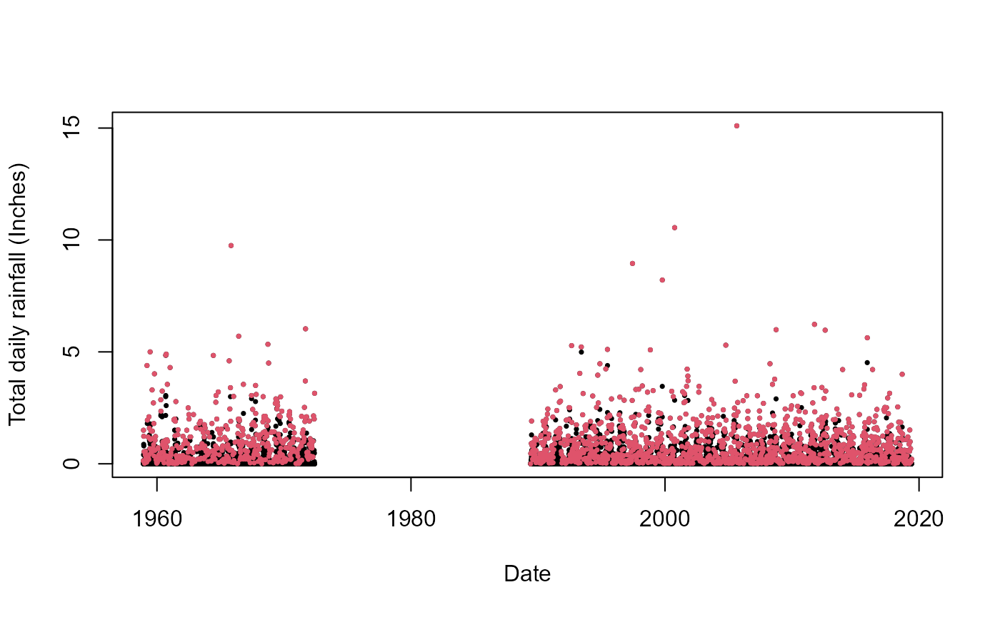
Repeating the analysis for the O-sWL with a 3-day window.
S20.OsWL.Declustered.SW<-Decluster_SW(Data=S20.OsWL.df,Window_Width=3)The Decluster_S_SW() function declusters a summed time
series via a storm window approach. First a moving window of width
(Window_Width_Sum) travels across the data and each time
the values are summed. As with the Decluster_SW() function
a moving window of length (Window_Width) is then moved over
the time series, if the maximum value in a window is located at its
center then the value considered a peak and retained, otherwise it is
set equal to NA. To decluster weekly precipitation totals using a seven
day storm window at S20:
#Declustering
S20.Rainfall.Declustered.S.SW<-Decluster_S_SW(Data=S20.Rainfall.df,
Window_Width_Sum=7, Window_Width=7)
#First twenty values of the weekly totals
S20.Rainfall.Declustered.S.SW$Totals[1:20]
#> [1] NA NA NA 0.23 0.19 0.10 1.56 1.94 2.04 2.04 2.04 2.91 3.02 2.75 3.15
#> [16] 3.05 3.05 3.05 2.18 2.03
#First ten values of the declustered weekly totals
S20.Rainfall.Declustered.S.SW$Declustered[1:20]
#> [1] NA NA NA NA NA NA NA NA NA NA NA NA NA NA 3.15
#> [16] NA NA NA NA NAPlotting the original and detrended series:
plot(S20.Rainfall.df$Date,S20.Rainfall.Declustered.S.SW$Totals,pch=16,cex=0.5,
xlab="Date",ylab="Total weekly rainfall (Inches)")
points(S20.Rainfall.df$Date,S20.Rainfall.Declustered.S.SW$Declustered,pch=16,col=2,cex=0.5)
Fit GPD
The GPD_Fit() function fits a generalized Pareto
distribution (GPD) to observations above a threshold u, specified as a
quantile of the completed time series. To fit the distribution the
GPD_Fit() function requires the declustered series as its
Data argument and the entire completed series, detrended if necessary,
as its Data_Full argument. The completed series is required
to calculate the value on the original scale corresponding to u. If
PLOT=TRUE then diagnostic plots are produced to allow an
assessment of the fit.
GPD_Fit(Data=S20.Detrend.Declustered.df$Rainfall,Data_Full=na.omit(S20.Detrend.df$Rainfall),
u=0.997,PLOT=TRUE,xlab_hist="Rainfall (Inches)",y_lab="Rainfall (Inches)")
#> $Threshold
#> [1] 3.5465
#>
#> $Rate
#> [1] 1.021938
#>
#> $sigma
#> [1] 1.421037
#>
#> $xi
#> [1] 0.1696554
#>
#> $sigma.SE
#> [1] 0.2365755
#>
#> $xi.SE
#> [1] 0.1781031Solari (2017) automated threshold selection
Solari et al. (2017) proposes a methodology for automatic threshold estimation, based on an EDF-statistic and a goodness of fit test to test the null hypothesis that exceedances of a high threshold come from a GPD distribution.
EDF-statistics measure the distance between the empirical distribution obtained from the sample and the parametric distribution . The Anderson Darling statistic is an EDF-statistic, which assigns more weight to the tails of the data than similar measures. Sinclair et al. (1990) proposed the right-tail weighted Anderson Darling statistic which allocates more weight to the upper tail and less to the lower tail of the distribution than and is given by: $${A}_{R}^{2}= -\frac{n}{2} - \sum\_{i=1}^{n} \left\[\left(2-\frac{(2i-1)}{n}\right)\text{log}(1-z\_{i})+2z\_{i}\right\] $$ where and is the sample size. The approach in Solari et al. (2017) is implemented as follows:
- A time series is declustered using the storm window approach to identify independent peaks.
- Candidate thresholds are defined by ordering the peaks and removing any repeated values. A GPD is fit to all the peaks above each candidate threshold. The right-tail weighted Anderson-Darling statistic and its corresponding p-value are calculated for each threshold.
- The threshold that minimizes one minus the p-value is then selected.
The GPD_Threshold_Solari() function carries out these
steps.
S20.Rainfall.Solari<-GPD_Threshold_Solari(Event=S20.Rainfall.Declustered.SW$Declustered,
Data=S20.Detrend.df$Rainfall)
#> Error in solve.default(family$info(o)) :
#> Lapack routine dgesv: system is exactly singular: U[2,2] = 0
#> Error in diag(o$cov) : invalid 'nrow' value (too large or NA)The optimum threshold according to the Solari approach is
S20.Rainfall.Solari$Candidate_Thres
#> [1] 2.6
Rainfall.Thres.Quantile<-ecdf(S20.Detrend.df$Rainfall)(S20.Rainfall.Solari$Candidate_Thres)The GPD_Threshold_Solari_Sel() allows the
goodness-of-fit at a particular threshold (Thres) to be
investigated in more detail. Let’s study the fit of the threshold
selected by the method.
Solari.Sel<-GPD_Threshold_Solari_Sel(Event=S20.Rainfall.Declustered.SW$Declustered,
Data=S20.Detrend.df$Rainfall,
Solari_Output=S20.Rainfall.Solari,
Thres=S20.Rainfall.Solari$Candidate_Thres,
RP_Max=100)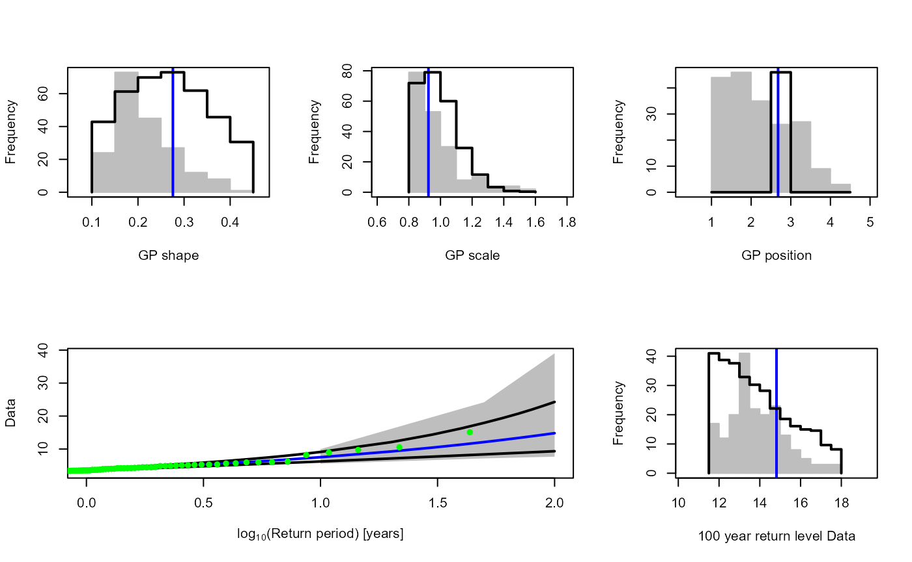
Repeating the automated threshold selection procedure for O-sWL.
S20.OsWL.Solari<-GPD_Threshold_Solari(Event=S20.OsWL.Declustered.SW$Declustered,
Data=S20.Detrend.df$OsWL)
#> Error in solve.default(family$info(o)) :
#> Lapack routine dgesv: system is exactly singular: U[2,2] = 0
#> Error in diag(o$cov) : invalid 'nrow' value (too large or NA)
#> Error in solve.default(family$info(o)) :
#> Lapack routine dgesv: system is exactly singular: U[2,2] = 0
#> Error in diag(o$cov) : invalid 'nrow' value (too large or NA)
S20.OsWL.Solari$Candidate_Thres
#> [1] 2.032
OsWL.Thres.Quantile<-ecdf(S20.Detrend.df$OsWL)(S20.OsWL.Solari$Candidate_Thres)and checking the fit of the GPD at the selected threshold.
Solari.Sel<-GPD_Threshold_Solari_Sel(Event=S20.OsWL.Declustered.SW$Declustered,
Data=S20.Detrend.df$OsWL,
Solari_Output=S20.OsWL.Solari,
Thres=S20.OsWL.Solari$Candidate_Thres,
RP_Max=100)
3. Correlation analysis
We can use the Kendall_Lag() function to view the
Kendall’s rank correlations coefficient
between the time series over a range of lags
S20.Kendall.Results<-Kendall_Lag(Data=S20.Detrend.df,GAP=0.2)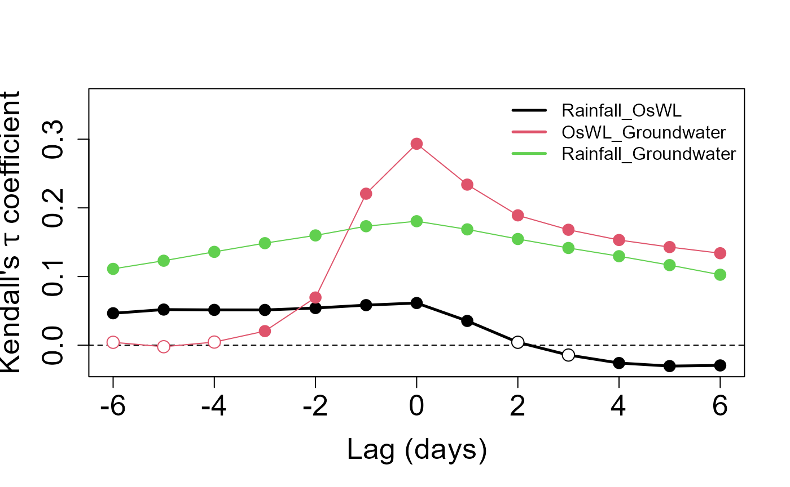
Let’s pull out the Kendall correlation coefficient values between rainfall and O-sWL for lags of applied to the latter quantity
S20.Kendall.Results$Value$Rainfall_OsWL
#> [1] 0.046483308 0.051860955 0.051392298 0.051311970 0.054097316
#> [6] 0.058316831 0.061388245 0.035305812 0.004206059 -0.014356749
#> [11] -0.025993095 -0.030431776 -0.029481162and the corresponding p-values testing the null hypothesis
S20.Kendall.Results$Test$Rainfall_OsWL_Test
#> [1] 5.819748e-13 1.014698e-15 8.196547e-16 1.030482e-15 5.160274e-17
#> [6] 1.887733e-19 1.987221e-20 2.232548e-07 4.033739e-01 7.669577e-02
#> [11] 1.186248e-03 6.352872e-05 3.864403e-054. Bivariate Analysis
Two-sided conditional sampling - copula theory method
In the report the 2D analysis considers the two forcings currently accounted for in structural design assessments undertaken by SFWMD: rainfall and O-sWL. The 2D analysis commences with the well-established two-sided conditional sampling approach, where excesses of a conditioning variable are paired with co-occurring values of another variable to create two samples. For each sample the marginals (one extreme, one non-extreme) and joint distribution are then modeled.
The two (conditional) joint distributions are modeled independently
of the marginals by using a copula. The
Copula_Threshold_2D() function explores the sensitivity of
the best fitting copula, in terms of Akaike Information Criterion (AIC),
to allow the practitioner to make an informed choice with regards to
threshold selection. It undertakes the conditional sampling described
above and reports the best fitting bivariate copula. The procedure is
carried out for a single or range of thresholds specified by the
u argument and the procedure is automatically repeated with
the variables switched.
Copula_Threshold_2D(Data_Detrend=S20.Detrend.df[,-c(1,4)],
Data_Declust=S20.Detrend.Declustered.df[,-c(1,4)],
y_lim_min=-0.075, y_lim_max =0.25,
Upper=c(2,9), Lower=c(2,10),GAP=0.15)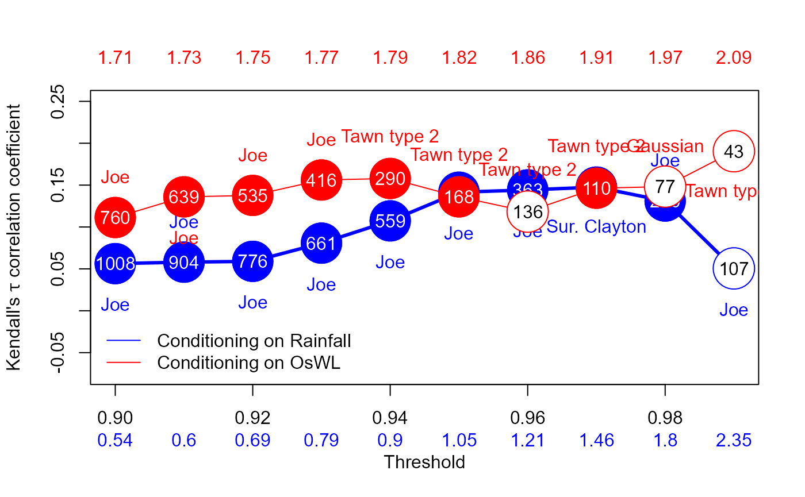
#> $Kendalls_Tau1
#> [1] 0.05627631 0.05803451 0.05900376 0.08072261 0.10731477 0.14151449
#> [7] 0.14427232 0.14762199 0.13101587 0.05056147
#>
#> $p_value_Var1
#> [1] 7.698074e-03 9.251524e-03 1.424015e-02 1.974145e-03 1.559739e-04
#> [6] 1.171141e-05 4.256557e-05 2.055448e-04 6.000832e-03 4.413023e-01
#>
#> $N_Var1
#> [1] 1008 904 776 661 559 432 363 286 200 107
#>
#> $Copula_Family_Var1
#> [1] 6 6 6 6 6 6 6 13 6 6
#>
#> $Kendalls_Tau2
#> [1] 0.1113049 0.1359921 0.1377104 0.1561184 0.1579352 0.1359861 0.1183870
#> [8] 0.1463056 0.1482198 0.1904729
#>
#> $p_value_Var2
#> [1] 2.720713e-05 2.549673e-06 1.199322e-05 1.143046e-05 1.879301e-04
#> [6] 1.335664e-02 5.199742e-02 3.145804e-02 6.891926e-02 8.220838e-02
#>
#> $N_Var2
#> [1] 760 639 535 416 290 168 136 110 77 43
#>
#> $Copula_Family_Var2
#> [1] 6 6 6 6 204 204 204 204 1 204The Diag_Non_Con() function is designed to aid in the
selection of the appropriate (non-extreme) unbounded marginal
distribution for the non-conditioned variable.
S20.Rainfall<-Con_Sampling_2D(Data_Detrend=S20.Detrend.df[,-c(1,4)],
Data_Declust=S20.Detrend.Declustered.df[,-c(1,4)],
Con_Variable="Rainfall",u = Rainfall.Thres.Quantile)
Diag_Non_Con(Data=S20.Rainfall$Data$OsWL,Omit=c("Gum","RGum"),x_lab="O-sWL (ft NGVD 29)",y_lim_min=0,y_lim_max=1.5)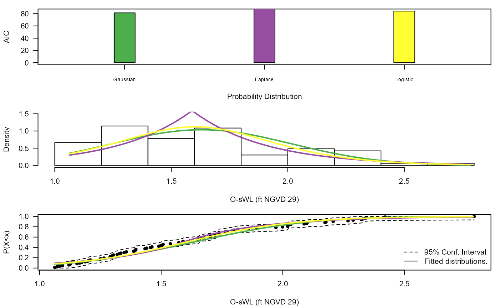
#> $AIC
#> Distribution AIC
#> 1 Gaus 81.27871
#> 2 Gum NA
#> 3 Lapl 92.82204
#> 4 Logis 84.19031
#> 5 RGum NA
#>
#> $Best_fit
#> [1] "Gaus"The Diag_Non_Con_Sel() function, is similar to the
Diag_Non_Con() command, but only plots the probability
density function and cumulative distribution function of a (single)
selected univariate distribution in order to more clearly demonstrate
the goodness of fit of a particular distribution. The options are the
Gaussian (Gaus), Gumbel (Gum), Laplace
(Lapl), logistic (Logis) and reverse Gumbel
(RGum) distributions.
Diag_Non_Con_Sel(Data=S20.Rainfall$Data$OsWL,x_lab="O-sWL (ft NGVD 29)",
y_lim_min=0,y_lim_max=1.5,Selected="Logis")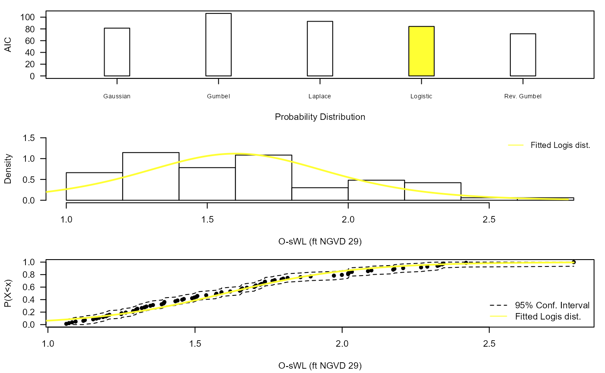
A generalized Pareto distribution is fitted to the marginal
distribution of the conditioning variable i.e. the declustered excesses
identified using Con_Sampling_2D().
The process of selecting a conditional sample and fitting marginal
distributions is repeated but instead conditioning on O-sWL. The
non-conditional variable in this case is (total daily) rainfall, which
has a lower bound at zero, and thus requires a suitably truncated
distribution. The Diag_Non_Con_Trunc fits a selection of
truncated distributions to a vector of data. The
Diag_Non_Con_Sel_Trunc function is analogous to the
Diag_Non_Con_Sel function, available distributions are the
Birnbaum-Saunders (BS), exponential (Exp),
gamma (Gam(2)), inverse Gaussian (InvG),
lognormal (LogN), Tweedie (Twe) and Weibull
(Weib). If the gamlss and gamlss.mx packages are loaded
then the three-parameter gamma (Gam(3)), two-parameter
mixed gamma (GamMix(2)) and three-parameter mixed gamma
(GamMix(3)) distributions are also tested.
S20.OsWL<-Con_Sampling_2D(Data_Detrend=S20.Detrend.df[,-c(1,4)],
Data_Declust=S20.Detrend.Declustered.df[,-c(1,4)],
Con_Variable="OsWL",u=OsWL.Thres.Quantile)
S20.OsWL$Data$Rainfall<-S20.OsWL$Data$Rainfall+runif(length(S20.OsWL$Data$Rainfall),0.001,0.01)
Diag_Non_Con_Trunc(Data=S20.OsWL$Data$Rainfall+0.001,x_lab="Rainfall (Inches)",
y_lim_min=0,y_lim_max=2)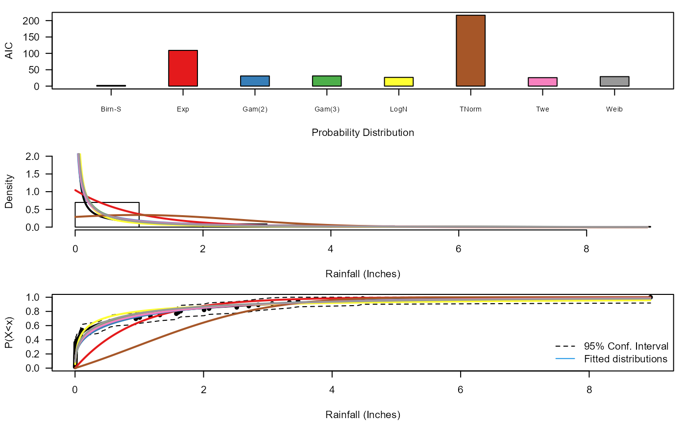
#> $AIC
#> Distribution AIC
#> 1 BS 2.058415
#> 2 Exp 109.079681
#> 3 Gam(2) 30.987116
#> 4 Gam(3) 31.072202
#> 5 LNorm 26.612261
#> 6 TNorm 216.413645
#> 7 Twe 25.866156
#> 8 Weib 28.999196
#>
#> $Best_fit
#> [1] "BS"
Diag_Non_Con_Trunc_Sel(Data=S20.OsWL$Data$Rainfall+0.001,x_lab="Rainfall (Inches)",
y_lim_min=0,y_lim_max=2,
Selected="BS")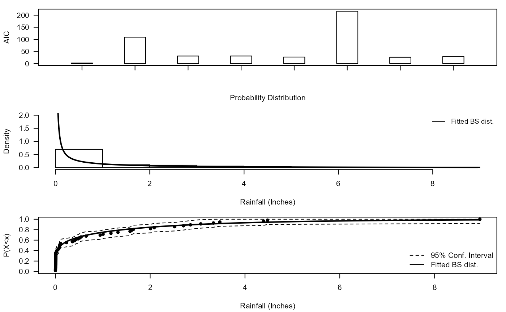
The Design_Event_2D() function finds the isoline
associated with a particular return period, by overlaying the two
corresponding isolines from the joint distributions fitted to the
conditional samples using the method in Bender et al. (2016).
Design_Event_2D() requires the copulas families chosen to
model the dependence structure in the two conditional samples as
input.
S20.Copula.Rainfall<-Copula_Threshold_2D(Data_Detrend=S20.Detrend.df[,-c(1,4)],
Data_Declust=S20.Detrend.Declustered.df[,-c(1,4)],
u1=Rainfall.Thres.Quantile,u2=NA,
y_lim_min=0,y_lim_max=0.25, GAP=0.075)$Copula_Family_Var1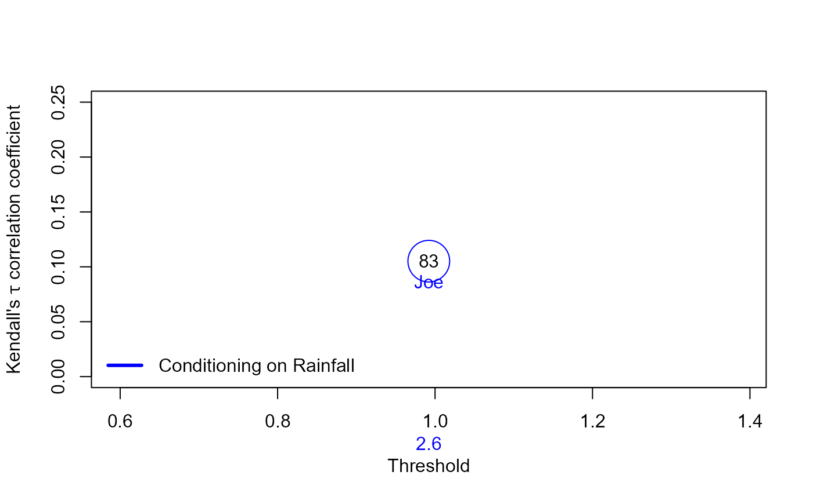
S20.Copula.OsWL<-Copula_Threshold_2D(Data_Detrend=S20.Detrend.df[,-c(1,4)],
Data_Declust=S20.Detrend.Declustered.df[,-c(1,4)],
u1=NA,u2=OsWL.Thres.Quantile,
y_lim_min=0,y_lim_max=0.25,GAP=0.075)$Copula_Family_Var2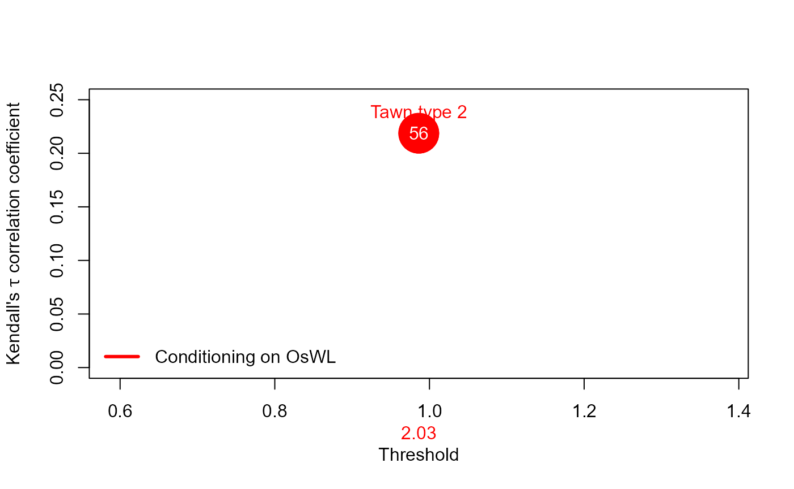
As input the function requires
-
Data= Original (detrended) rainfall and O-sWL series -
Data_Con1/Data_Con2= two conditionally sampled data sets, -
u1/u2orThres1/Thres2= two thresholds associated with the conditionally sampled data sets -
Copula_Family1/Copula_Family2two families of the two fitted copulas -
Marginal_Dist1/Marginal_Dist2Selected non-extreme marginal distributions -
RP= Return Period of interest -
N= size of the sample from the fitted joint distributions used to estimate the density along the isoline of interest -
N_Ensemble= size of the ensemble of events sampled along the isoline of interest
S20.Bivariate<-Design_Event_2D(Data=S20.Detrend.df[,-c(1,4)],
Data_Con1=S20.Rainfall$Data,
Data_Con2=S20.OsWL$Data,
u1=Rainfall.Thres.Quantile,
u2=OsWL.Thres.Quantile,
Copula_Family1=S20.Copula.Rainfall,
Copula_Family2=S20.Copula.OsWL,
Marginal_Dist1="Logis", Marginal_Dist2="BS",
x_lab="Rainfall (Inches)",y_lab="O-sWL (ft NGVD 29)",
RP=100,N=10^7,N_Ensemble=10)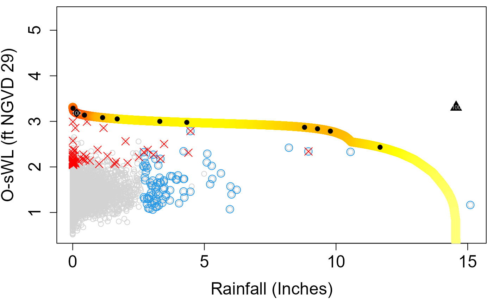
Design event according to the “Most likely” event approach (diamond in the plot)
S20.Bivariate$MostLikelyEvent$`100`
#> Rainfall OsWL
#> 1 0.1508948 3.183035Design event under the assumption of full dependence (triangle in the plot)
S20.Bivariate$FullDependence$`100`
#> Rainfall OsWL
#> 1 14.56 3.31Cooley (2019) projection method
Cooley et al. (2019) puts forward a non-parametric approach for constructing the isoline associated with exceedance probability . The approach centers around constructing a base isoline with a larger exceedance probability and projecting it to more extreme levels. should be small enough to be representative of the extremal dependence but large enough for sufficient data to be involved in the estimation procedure.
The approach begins by approximating the joint survival function via a kernel density estimator from which the base isoline is derived. For the marginal distributions, a GPD is fit above a sufficiently high threshold to allow extrapolation into the tails and the empirical distribution is used below the threshold. Unless the joint distribution of the two variables is regularly varying, a marginal transformation is required for the projection. The two marginals are thus transformed to Frechet scales. For asymptotic dependence, on the transformed scale the isoline with exceedance probability can be obtained as where . For the case of asymptotic independence, , where is the tail dependence coefficient. Applying the inverse Frechet transformation gives the isoline on the original scale.
Let’s estimate the 100-year (p=0.01) rainfall-OsWL isoline at S20 using the 10-year isoline as the base isoline.
#Fitting the marginal distribution
#See next section for information on the Migpd_Fit function
S20.GPD<-Migpd_Fit(Data=S20.Detrend.Declustered.df[,2:3], Data_Full = S20.Detrend.df[,2:3],
mqu =c(0.99,0.99))
#10-year exceedance probability for daily data
p.10<-(1/365.25)/10
#10-year exceedance probability for daily data
p.100<-(1/365.25)/100
#Calculating the isoline
isoline<-Cooley19(Data=na.omit(S20.Detrend.df[,2:3]),Migpd=S20.GPD,
p.base=p.10,p.proj=p.100,PLOT=TRUE,x_lim_max_T=15000,y_lim_max_T=15000)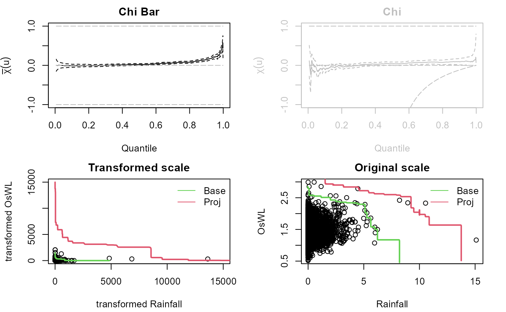
Radial-based isolines
When the dependence structure between two variables differs significantly across conditional samples — as captured by their respective copulas — it can produce an inflection point in certain regions of the probability space when overlaying the partial isolines. While these effects are mathematically sound, they represent methodological artifacts rather than natural phenomena, potentially limiting the physical interpretability of results in these regions of the joint distribution. Murphy-Barltrop et al. (2023) proposed new estimation methods for bivariate isolines that avoid fitting copulas while accounting for both asymptotic independence (AI) and asymptotic dependence (AD). Their techniques exploit existing bivariate extreme value models — specifically the Heffernan and Tawn (2004) HT04 and Wadsworth and Tawn (2013) [WT13] approaches. An additional benefit of these new approaches is that it is possible to derive confidence intervals that account for the sampling uncertainty.
When employing the HT04 model to construct the isoline with exceedance probability , the first step is to convert the variables to the Laplace scale . The HT04 model is a conditional exceedance model and is therefore fit twice, conditioning on both and separately, thus allowing us to estimate the curve in different regions. In particular, we consider the regions defined by where and where $ y_{L} x_{L}$. For region , we start by selecting a high threshold such that and fit the HT04 model to observations where . Next, a decreasing series of thresholds is defined in the interval where is the minimal quantile for which the fitted model is valid and is the limit that values can attain on this curve. For a given quantile in the interval , use the model to simulate from the conditional distribution and estimate the th quantile. Since and , the point lies on the isoline. The process is repeated until a value where is obtained or we exhaust all values in the interval. A very similar procedure is implemented for region , this time selecting , a high quantile of for quantiles in the interval where if it exists and otherwise.
The WT13 model is defined in terms of where are a pair of variables with standard exponential marginal distributions, for any ray in , where is slowly varying for each ray and is termed the angular dependence function. To find the isoline with exceedance probability , a set of equally spaced rays on is defined and for each ray estimating the angular dependence function via the Hill estimator using observations above the quantile of the variable . For any large , WT13 states that for any and . If is the quantile of i.e., , then . Re-arranging for gives . An estimate for the return curve with exceedance probability is obtained by letting .
The confidence intervals for isolines are estimated using a bootstrap procedure following the methodology outlined in Murphy-Barltrop et al. (2023). In the procedure a set of rays are defined at equally-spaced angles within the interval . Each ray intersects the isoline exactly once, and since the angle is fixed, the L2 norm represents the radial distance to the intersection point. Next, the observed data set is bootstrapped a large number of times (e.g., 1000 iterations) to generate multiple samples of the same size as the original data set. For each bootstrap sample, the L2 norm is calculated for each ray’s intersection with the fitted isoline. The confidence intervals are then derived by computing the relevant percentiles (e.g., 2.5th and 97.5th percentiles for 95% confidence intervals) of these L2 norms across all bootstrap iterations.
The return_curve_est function derives isolines for a
given rp. The quantiles q of the GPDs of the
HT04 and WT13 models must be specified along with the average occurrence
frequency of the events in the data mu. The methods for
declustering the time series and the associated parameters are also
required. The bootstrapping procedure for estimate the sampling
uncertainty can be carried out using a basic
(boot_method = "basic"), block
(boot_method = "block") or monthly
(boot_method = "month") bootstrap. The latter two are
recommend where there is a temporal dependence in the data. For the
basic bootstrap whether the sampling is carried out with
boot_replace = T or without boot_replace = F
replacement must be specified while the block bootstrap require
"block_length". The number of number of rays along which to
compute points on the curve for each sample n_grad is
another input. For the relative likelihood of points on the isoline to
be estimated based on the observations set most_likely = T.
For the HT04 model the number of simulations n_sim is
required. The function is implemented to find the 100-year isoline at
S-22.
#Adding dates to complete final month of combined records
#S22.Detrend.df$Date<-as.Date(as.character(S22.Detrend.df$Date), format = "%m/%d/%Y")
final.month = data.frame(seq(as.Date("2019-02-04"),as.Date("2019-02-28"),by="day"),NA,NA,NA)
colnames(final.month) = c("Date","Rainfall","OsWL","Groundwater")
S22.Detrend.df.extended = rbind(S22.Detrend.df,final.month)
#Derive return curves
curve = return_curve_est(data=S22.Detrend.df.extended[,1:3],
q=0.985,rp=100,mu=365.25,n_sim=100,
n_grad=50,n_boot=100,boot_method="monthly",
boot_replace=NA, block_length=NA, boot_prop=0.8,
decl_method_x="runs", decl_method_y="runs",
window_length_x=NA,window_length_y=NA,
u_x=0.95, u_y=0.95,
sep_crit_x=36, sep_crit_y=36,
most_likely=T, n_ensemble=10,
alpha=0.1, x_lab=NA, y_lab=NA)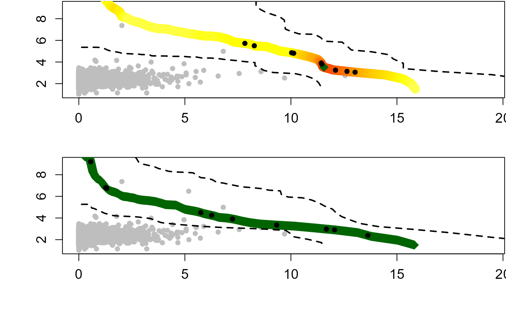
The first points on the median curve using the WT13 model are:
head(curve$median_wt13)
#> Rainfall OsWL
#> 1 0.2672374 9.694948
#> 2 0.2799752 9.684196
#> 3 0.2927129 9.673444
#> 4 0.3054506 9.662692
#> 5 0.3181883 9.651940
#> 6 0.3309260 9.641188and the corresponding elements of the upper and lower confident bounds are:
head(curve$ub_wt13)
#> Rainfall OsWL
#> [1,] 0.6174237 21.06106
#> [2,] 0.8872747 15.40675
#> [3,] 1.1984116 13.95405
#> [4,] 1.4575731 12.79219
#> [5,] 1.6204284 11.46010
#> [6,] 1.7966694 10.63246
head(curve$lb_wt13)
#> Rainfall OsWL
#> [1,] 0.1307650 5.265416
#> [2,] 0.2617785 5.265416
#> [3,] 0.3932909 5.265416
#> [4,] 0.5252973 5.263323
#> [5,] 0.6063044 4.927009
#> [6,] 0.7209362 4.877799Events estimated to possess a -year joint return period.
#"Most-likely" design event
curve$most_likely_wt13
#> Rainfall OsWL
#> 1 0.2672374 9.694948
#> 2 0.2799752 9.684196
#> 3 0.2927129 9.673444
#> 4 0.3054506 9.662692
#> 5 0.3181883 9.651940
#> 6 0.3309260 9.641188
#> 7 0.3436637 9.630436
#> 8 0.3564014 9.619684
#> 9 0.3691391 9.608932
#> 10 0.3818768 9.598180
#> 11 0.3946146 9.587428
#> 12 0.4073523 9.576675
#> 13 0.4200900 9.565923
#> 14 0.4328277 9.555171
#> 15 0.4455654 9.544419
#> 16 0.4583031 9.533667
#> 17 0.4710408 9.522915
#> 18 0.4837785 9.512163
#> 19 0.4965162 9.501411
#> 20 0.5092540 9.490659
#> 21 0.5217634 9.479869
#> 22 0.5232648 9.467223
#> 23 0.5247661 9.454576
#> 24 0.5262674 9.441930
#> 25 0.5277688 9.429284
#> 26 0.5292701 9.416638
#> 27 0.5307715 9.403992
#> 28 0.5322728 9.391346
#> 29 0.5337741 9.378700
#> 30 0.5352755 9.366054
#> 31 0.5367768 9.353408
#> 32 0.5382782 9.340761
#> 33 0.5397795 9.328115
#> 34 0.5412808 9.315469
#> 35 0.5427822 9.302823
#> 36 0.5442835 9.290177
#> 37 0.5457849 9.277531
#> 38 0.5472862 9.264885
#> 39 0.5487875 9.252239
#> 40 0.5502889 9.239592
#> 41 0.5517902 9.226946
#> 42 0.5532916 9.214300
#> 43 0.5547929 9.201654
#> 44 0.5562942 9.189008
#> 45 0.5577956 9.176362
#> 46 0.5592969 9.163716
#> 47 0.5607983 9.151070
#> 48 0.5622996 9.138423
#> 49 0.5638009 9.125777
#> 50 0.5653023 9.113131
#> 51 0.5668036 9.100485
#> 52 0.5683050 9.087839
#> 53 0.5698063 9.075193
#> 54 0.5713076 9.062547
#> 55 0.5728090 9.049901
#> 56 0.5743103 9.037254
#> 57 0.5758116 9.024608
#> 58 0.5773130 9.011962
#> 59 0.5788143 8.999316
#> 60 0.5803157 8.986670
#> 61 0.5818170 8.974024
#> 62 0.5833183 8.961378
#> 63 0.5848197 8.948732
#> 64 0.5863210 8.936085
#> 65 0.5878224 8.923439
#> 66 0.5893237 8.910793
#> 67 0.5908250 8.898147
#> 68 0.5923264 8.885501
#> 69 0.5938277 8.872855
#> 70 0.5953291 8.860209
#> 71 0.5968304 8.847563
#> 72 0.5983317 8.834916
#> 73 0.5998331 8.822270
#> 74 0.6013344 8.809624
#> 75 0.6028358 8.796978
#> 76 0.6043371 8.784332
#> 77 0.6058384 8.771686
#> 78 0.6073398 8.759040
#> 79 0.6088411 8.746394
#> 80 0.6103425 8.733747
#> 81 0.6118438 8.721101
#> 82 0.6133451 8.708455
#> 83 0.6148465 8.695809
#> 84 0.6163478 8.683163
#> 85 0.6178492 8.670517
#> 86 0.6193505 8.657871
#> 87 0.6208518 8.645225
#> 88 0.6223532 8.632578
#> 89 0.6238545 8.619932
#> 90 0.6253559 8.607286
#> 91 0.6268572 8.594640
#> 92 0.6283585 8.581994
#> 93 0.6298599 8.569348
#> 94 0.6313612 8.556702
#> 95 0.6328626 8.544056
#> 96 0.6343639 8.531410
#> 97 0.6358652 8.518763
#> 98 0.6373666 8.506117
#> 99 0.6388679 8.493471
#> 100 0.6403692 8.480825
#> 101 0.6418706 8.468179
#> 102 0.6433719 8.455533
#> 103 0.6448733 8.442887
#> 104 0.6463746 8.430241
#> 105 0.6478759 8.417594
#> 106 0.6493773 8.404948
#> 107 0.6508786 8.392302
#> 108 0.6523800 8.379656
#> 109 0.6538813 8.367010
#> 110 0.6553826 8.354364
#> 111 0.6568840 8.341718
#> 112 0.6583853 8.329072
#> 113 0.6598867 8.316425
#> 114 0.6613880 8.303779
#> 115 0.6628893 8.291133
#> 116 0.6643907 8.278487
#> 117 0.6658920 8.265841
#> 118 0.6673934 8.253195
#> 119 0.6688947 8.240549
#> 120 0.6722271 8.228001
#> 121 0.6756180 8.215457
#> 122 0.6790090 8.202912
#> 123 0.6823999 8.190368
#> 124 0.6857908 8.177823
#> 125 0.6891818 8.165279
#> 126 0.6925727 8.152734
#> 127 0.6959637 8.140190
#> 128 0.6993546 8.127645
#> 129 0.7027456 8.115101
#> 130 0.7061365 8.102556
#> 131 0.7095274 8.090012
#> 132 0.7129184 8.077467
#> 133 0.7163093 8.064923
#> 134 0.7197003 8.052378
#> 135 0.7230912 8.039834
#> 136 0.7264822 8.027290
#> 137 0.7298731 8.014745
#> 138 0.7332640 8.002201
#> 139 0.7366550 7.989656
#> 140 0.7400459 7.977112
#> 141 0.7434369 7.964567
#> 142 0.7468278 7.952023
#> 143 0.7502188 7.939478
#> 144 0.7536097 7.926934
#> 145 0.7570006 7.914389
#> 146 0.7603916 7.901845
#> 147 0.7637825 7.889300
#> 148 0.7671735 7.876756
#> 149 0.7705644 7.864211
#> 150 0.7739554 7.851667
#> 151 0.7773463 7.839122
#> 152 0.7807372 7.826578
#> 153 0.7841282 7.814034
#> 154 0.7875191 7.801489
#> 155 0.7909101 7.788945
#> 156 0.7943010 7.776400
#> 157 0.7976920 7.763856
#> 158 0.8010829 7.751311
#> 159 0.8044738 7.738767
#> 160 0.8078648 7.726222
#> 161 0.8112557 7.713678
#> 162 0.8146467 7.701133
#> 163 0.8180376 7.688589
#> 164 0.8214286 7.676044
#> 165 0.8286519 7.664171
#> 166 0.8402245 7.653060
#> 167 0.8517970 7.641950
#> 168 0.8633696 7.630839
#> 169 0.8749422 7.619728
#> 170 0.8865147 7.608617
#> 171 0.8980873 7.597506
#> 172 0.9096599 7.586395
#> 173 0.9212324 7.575284
#> 174 0.9328050 7.564173
#> 175 0.9443775 7.553062
#> 176 0.9559501 7.541951
#> 177 0.9675227 7.530841
#> 178 0.9790952 7.519730
#> 179 0.9906678 7.508619
#> 180 1.0022403 7.497508
#> 181 1.0087456 7.485409
#> 182 1.0137237 7.473012
#> 183 1.0187019 7.460615
#> 184 1.0236800 7.448218
#> 185 1.0286582 7.435821
#> 186 1.0336363 7.423424
#> 187 1.0386145 7.411027
#> 188 1.0435926 7.398630
#> 189 1.0485708 7.386233
#> 190 1.0535489 7.373836
#> 191 1.0585270 7.361439
#> 192 1.0635052 7.349042
#> 193 1.0684833 7.336645
#> 194 1.0734615 7.324248
#> 195 1.0784396 7.311851
#> 196 1.0834178 7.299455
#> 197 1.0883959 7.287058
#> 198 1.0933741 7.274661
#> 199 1.0983522 7.262264
#> 200 1.1033304 7.249867
#> 201 1.1083085 7.237470
#> 202 1.1132866 7.225073
#> 203 1.1182648 7.212676
#> 204 1.1232429 7.200279
#> 205 1.1282211 7.187882
#> 206 1.1331992 7.175485
#> 207 1.1381774 7.163088
#> 208 1.1431555 7.150691
#> 209 1.1478900 7.138268
#> 210 1.1524849 7.125830
#> 211 1.1570798 7.113393
#> 212 1.1616747 7.100955
#> 213 1.1662696 7.088517
#> 214 1.1708645 7.076079
#> 215 1.1754594 7.063641
#> 216 1.1800543 7.051203
#> 217 1.1846492 7.038765
#> 218 1.1892441 7.026327
#> 219 1.1938390 7.013890
#> 220 1.1984339 7.001452
#> 221 1.2030288 6.989014
#> 222 1.2076237 6.976576
#> 223 1.2122186 6.964138
#> 224 1.2168135 6.951700
#> 225 1.2214084 6.939262
#> 226 1.2260033 6.926825
#> 227 1.2305982 6.914387
#> 228 1.2351931 6.901949
#> 229 1.2397880 6.889511
#> 230 1.2443829 6.877073
#> 231 1.2489778 6.864635
#> 232 1.2535727 6.852197
#> 233 1.2581676 6.839759
#> 234 1.2627625 6.827322
#> 235 1.2673574 6.814884
#> 236 1.2741139 6.802737
#> 237 1.2814248 6.790664
#> 238 1.2887357 6.778592
#> 239 1.2960467 6.766519
#> 240 1.3033576 6.754447
#> 241 1.3106685 6.742375
#> 242 1.3179794 6.730302
#> 243 1.3252903 6.718230
#> 244 1.3326013 6.706157
#> 245 1.3399122 6.694085
#> 246 1.3472231 6.682012
#> 247 1.3545340 6.669940
#> 248 1.3618449 6.657868
#> 249 1.3691559 6.645795
#> 250 1.3764668 6.633723
#> 251 1.3837777 6.621650
#> 252 1.3910886 6.609578
#> 253 1.3983996 6.597506
#> 254 1.4084669 6.586068
#> 255 1.4203542 6.575049
#> 256 1.4322415 6.564031
#> 257 1.4441288 6.553012
#> 258 1.4560161 6.541994
#> 259 1.4679033 6.530975
#> 260 1.4797906 6.519957
#> 261 1.4916779 6.508939
#> 262 1.5035652 6.497920
#> 263 1.5154525 6.486902
#> 264 1.5273398 6.475883
#> 265 1.5392271 6.464865
#> 266 1.5530762 6.454649
#> 267 1.5704477 6.445877
#> 268 1.5878192 6.437104
#> 269 1.6051908 6.428332
#> 270 1.6225623 6.419559
#> 271 1.6399339 6.410786
#> 272 1.6573054 6.402014
#> 273 1.6746769 6.393241
#> 274 1.6920485 6.384468
#> 275 1.7080041 6.375094
#> 276 1.7206259 6.364305
#> 277 1.7332477 6.353515
#> 278 1.7458695 6.342725
#> 279 1.7584913 6.331935
#> 280 1.7711131 6.321145
#> 281 1.7837349 6.310355
#> 282 1.7963567 6.299566
#> 283 1.8089785 6.288776
#> 284 1.8216003 6.277986
#> 285 1.8342221 6.267196
#> 286 1.8463829 6.256285
#> 287 1.8552267 6.244500
#> 288 1.8640706 6.232715
#> 289 1.8729144 6.220930
#> 290 1.8817582 6.209145
#> 291 1.8906020 6.197360
#> 292 1.8994459 6.185575
#> 293 1.9082897 6.173791
#> 294 1.9171335 6.162006
#> 295 1.9259773 6.150221
#> 296 1.9348212 6.138436
#> 297 1.9436650 6.126651
#> 298 1.9525088 6.114866
#> 299 1.9613526 6.103081
#> 300 1.9723390 6.091896
#> 301 1.9859680 6.081451
#> 302 1.9995971 6.071006
#> 303 2.0132261 6.060561
#> 304 2.0268551 6.050117
#> 305 2.0404842 6.039672
#> 306 2.0541132 6.029227
#> 307 2.0677422 6.018782
#> 308 2.0813712 6.008337
#> 309 2.0950003 5.997892
#> 310 2.1118826 5.989643
#> 311 2.1344521 5.985233
#> 312 2.1570216 5.980822
#> 313 2.1795911 5.976412
#> 314 2.2021606 5.972002
#> 315 2.2247302 5.967591
#> 316 2.2472997 5.963181
#> 317 2.2698692 5.958771
#> 318 2.2887985 5.951017
#> 319 2.3074394 5.942998
#> 320 2.3260804 5.934980
#> 321 2.3447213 5.926961
#> 322 2.3633623 5.918943
#> 323 2.3820032 5.910924
#> 324 2.4006442 5.902906
#> 325 2.4192851 5.894887
#> 326 2.4399750 5.888567
#> 327 2.4616920 5.883098
#> 328 2.4834090 5.877629
#> 329 2.5051260 5.872160
#> 330 2.5268430 5.866691
#> 331 2.5485600 5.861223
#> 332 2.5702770 5.855754
#> 333 2.5919939 5.850285
#> 334 2.6067521 5.840360
#> 335 2.6211520 5.830205
#> 336 2.6355520 5.820051
#> 337 2.6499519 5.809897
#> 338 2.6643519 5.799742
#> 339 2.6787519 5.789588
#> 340 2.6931518 5.779434
#> 341 2.7075518 5.769279
#> 342 2.7219517 5.759125
#> 343 2.7376862 5.749633
#> 344 2.7561029 5.741472
#> 345 2.7745195 5.733311
#> 346 2.7929362 5.725150
#> 347 2.8113529 5.716990
#> 348 2.8297695 5.708829
#> 349 2.8481862 5.700668
#> 350 2.8666028 5.692507
#> 351 2.8850195 5.684346
#> 352 2.9065366 5.678753
#> 353 2.9283939 5.673441
#> 354 2.9502513 5.668129
#> 355 2.9721087 5.662818
#> 356 2.9939661 5.657506
#> 357 3.0158235 5.652194
#> 358 3.0376809 5.646883
#> 359 3.0595383 5.641571
#> 360 3.0826139 5.638001
#> 361 3.1057981 5.634586
#> 362 3.1289822 5.631171
#> 363 3.1521664 5.627756
#> 364 3.1753505 5.624341
#> 365 3.1985347 5.620926
#> 366 3.2217188 5.617511
#> 367 3.2449030 5.614097
#> 368 3.2669378 5.609088
#> 369 3.2885903 5.603548
#> 370 3.3102429 5.598009
#> 371 3.3318954 5.592470
#> 372 3.3535480 5.586931
#> 373 3.3752005 5.581391
#> 374 3.3968531 5.575852
#> 375 3.4185056 5.570313
#> 376 3.4400020 5.564613
#> 377 3.4612040 5.558610
#> 378 3.4824061 5.552608
#> 379 3.5036082 5.546605
#> 380 3.5248103 5.540603
#> 381 3.5460124 5.534600
#> 382 3.5672144 5.528598
#> 383 3.5884165 5.522595
#> 384 3.6096186 5.516592
#> 385 3.6275690 5.508355
#> 386 3.6441115 5.499149
#> 387 3.6606540 5.489943
#> 388 3.6771965 5.480737
#> 389 3.6937390 5.471531
#> 390 3.7102815 5.462325
#> 391 3.7268239 5.453120
#> 392 3.7433664 5.443914
#> 393 3.7599089 5.434708
#> 394 3.7764946 5.425524
#> 395 3.7933867 5.416496
#> 396 3.8102789 5.407467
#> 397 3.8271710 5.398439
#> 398 3.8440631 5.389411
#> 399 3.8609552 5.380383
#> 400 3.8778474 5.371355
#> 401 3.8947395 5.362326
#> 402 3.9116316 5.353298
#> 403 3.9285237 5.344270
#> 404 3.9445305 5.334826
#> 405 3.9596553 5.324968
#> 406 3.9747800 5.315109
#> 407 3.9899048 5.305251
#> 408 4.0050295 5.295393
#> 409 4.0201542 5.285535
#> 410 4.0352790 5.275677
#> 411 4.0504037 5.265819
#> 412 4.0655285 5.255960
#> 413 4.0806532 5.246102
#> 414 4.0987149 5.238806
#> 415 4.1223376 5.236362
#> 416 4.1459602 5.233917
#> 417 4.1695829 5.231473
#> 418 4.1932056 5.229028
#> 419 4.2168283 5.226584
#> 420 4.2404509 5.224139
#> 421 4.2640736 5.221695
#> 422 4.2876963 5.219250
#> 423 4.3113190 5.216806
#> 424 4.3349539 5.214395
#> 425 4.3586072 5.212033
#> 426 4.3822604 5.209672
#> 427 4.4059137 5.207311
#> 428 4.4295669 5.204950
#> 429 4.4532202 5.202588
#> 430 4.4768734 5.200227
#> 431 4.5005267 5.197866
#> 432 4.5241800 5.195505
#> 433 4.5478332 5.193144
#> 434 4.5714865 5.190782
#> 435 4.5846291 5.180611
#> 436 4.5967122 5.169651
#> 437 4.6087954 5.158692
#> 438 4.6208785 5.147733
#> 439 4.6329616 5.136773
#> 440 4.6450447 5.125814
#> 441 4.6571278 5.114855
#> 442 4.6692109 5.103895
#> 443 4.6812941 5.092936
#> 444 4.6933772 5.081977
#> 445 4.7054603 5.071017
#> 446 4.7174771 5.060038
#> 447 4.7290582 5.048930
#> 448 4.7406394 5.037821
#> 449 4.7522205 5.026713
#> 450 4.7638017 5.015605
#> 451 4.7753829 5.004496
#> 452 4.7869640 4.993388
#> 453 4.7985452 4.982279
#> 454 4.8101263 4.971171
#> 455 4.8217075 4.960063
#> 456 4.8332887 4.948954
#> 457 4.8448698 4.937846
#> 458 4.8566106 4.926787
#> 459 4.8695703 4.916109
#> 460 4.8825299 4.905430
#> 461 4.8954896 4.894752
#> 462 4.9084493 4.884074
#> 463 4.9214090 4.873396
#> 464 4.9343686 4.862717
#> 465 4.9473283 4.852039
#> 466 4.9602880 4.841361
#> 467 4.9732476 4.830682
#> 468 4.9862073 4.820004
#> 469 4.9991670 4.809326
#> 470 5.0145084 4.799829
#> 471 5.0339966 4.792389
#> 472 5.0534848 4.784950
#> 473 5.0729730 4.777510
#> 474 5.0924613 4.770070
#> 475 5.1119495 4.762631
#> 476 5.1314377 4.755191
#> 477 5.1509259 4.747752
#> 478 5.1704141 4.740312
#> 479 5.1899023 4.732872
#> 480 5.2093906 4.725433
#> 481 5.2290661 4.718139
#> 482 5.2494217 4.711373
#> 483 5.2697774 4.704607
#> 484 5.2901331 4.697842
#> 485 5.3104888 4.691076
#> 486 5.3308445 4.684311
#> 487 5.3512001 4.677545
#> 488 5.3715558 4.670779
#> 489 5.3919115 4.664014
#> 490 5.4122672 4.657248
#> 491 5.4326228 4.650482
#> 492 5.4529785 4.643717
#> 493 5.4722121 4.636151
#> 494 5.4904909 4.627905
#> 495 5.5087697 4.619659
#> 496 5.5270485 4.611412
#> 497 5.5453273 4.603166
#> 498 5.5636061 4.594920
#> 499 5.5818849 4.586674
#> 500 5.6001637 4.578428
#> 501 5.6184425 4.570181
#> 502 5.6367213 4.561935
#> 503 5.6550001 4.553689
#> 504 5.6732789 4.545443
#> 505 5.6903941 4.536592
#> 506 5.7058266 4.526867
#> 507 5.7212591 4.517142
#> 508 5.7366916 4.507417
#> 509 5.7521242 4.497691
#> 510 5.7675567 4.487966
#> 511 5.7829892 4.478241
#> 512 5.7984217 4.468516
#> 513 5.8138542 4.458791
#> 514 5.8292867 4.449066
#> 515 5.8447192 4.439341
#> 516 5.8601518 4.429615
#> 517 5.8755843 4.419890
#> 518 5.8929449 4.411174
#> 519 5.9113356 4.402997
#> 520 5.9297264 4.394820
#> 521 5.9481171 4.386643
#> 522 5.9665079 4.378466
#> 523 5.9848986 4.370289
#> 524 6.0032893 4.362112
#> 525 6.0216801 4.353935
#> 526 6.0400708 4.345758
#> 527 6.0584616 4.337581
#> 528 6.0768523 4.329404
#> 529 6.0952431 4.321228
#> 530 6.1136338 4.313051
#> 531 6.1321554 4.304956
#> 532 6.1508061 4.296944
#> 533 6.1694568 4.288932
#> 534 6.1881075 4.280920
#> 535 6.2067582 4.272908
#> 536 6.2254089 4.264895
#> 537 6.2440596 4.256883
#> 538 6.2627103 4.248871
#> 539 6.2813610 4.240859
#> 540 6.3000117 4.232847
#> 541 6.3186624 4.224834
#> 542 6.3373131 4.216822
#> 543 6.3559638 4.208810
#> 544 6.3746146 4.200798
#> 545 6.3912168 4.191682
#> 546 6.4068678 4.182054
#> 547 6.4225188 4.172426
#> 548 6.4381698 4.162798
#> 549 6.4538208 4.153170
#> 550 6.4694718 4.143542
#> 551 6.4851228 4.133915
#> 552 6.5007738 4.124287
#> 553 6.5164248 4.114659
#> 554 6.5320758 4.105031
#> 555 6.5477268 4.095403
#> 556 6.5633778 4.085775
#> 557 6.5790288 4.076147
#> 558 6.5946798 4.066519
#> 559 6.6126813 4.058739
#> 560 6.6355575 4.054790
#> 561 6.6584337 4.050842
#> 562 6.6813099 4.046893
#> 563 6.7041861 4.042945
#> 564 6.7270622 4.038996
#> 565 6.7499384 4.035048
#> 566 6.7728146 4.031099
#> 567 6.7956908 4.027151
#> 568 6.8185670 4.023202
#> 569 6.8414431 4.019254
#> 570 6.8643193 4.015305
#> 571 6.8871955 4.011357
#> 572 6.9100717 4.007408
#> 573 6.9329479 4.003460
#> 574 6.9558240 3.999511
#> 575 6.9787002 3.995563
#> 576 7.0015764 3.991614
#> 577 7.0231987 3.986271
#> 578 7.0435088 3.979467
#> 579 7.0638189 3.972664
#> 580 7.0841290 3.965860
#> 581 7.1044391 3.959057
#> 582 7.1247492 3.952253
#> 583 7.1450593 3.945450
#> 584 7.1653694 3.938646
#> 585 7.1856795 3.931843
#> 586 7.2059896 3.925039
#> 587 7.2262997 3.918236
#> 588 7.2466098 3.911432
#> 589 7.2669199 3.904629
#> 590 7.2872301 3.897825
#> 591 7.3075402 3.891022
#> 592 7.3278503 3.884219
#> 593 7.3481604 3.877415
#> 594 7.3676275 3.870028
#> 595 7.3855029 3.861541
#> 596 7.4033784 3.853053
#> 597 7.4212539 3.844566
#> 598 7.4391293 3.836078
#> 599 7.4570048 3.827591
#> 600 7.4748802 3.819103
#> 601 7.4927557 3.810615
#> 602 7.5106311 3.802128
#> 603 7.5285066 3.793640
#> 604 7.5463821 3.785153
#> 605 7.5642575 3.776665
#> 606 7.5821330 3.768177
#> 607 7.6000084 3.759690
#> 608 7.6178839 3.751202
#> 609 7.6357593 3.742715
#> 610 7.6536348 3.734227
#> 611 7.6715102 3.725739
#> 612 7.6908548 3.718206
#> 613 7.7103376 3.710763
#> 614 7.7298205 3.703319
#> 615 7.7493034 3.695876
#> 616 7.7687862 3.688432
#> 617 7.7882691 3.680989
#> 618 7.8077519 3.673545
#> 619 7.8272348 3.666102
#> 620 7.8467177 3.658658
#> 621 7.8662005 3.651215
#> 622 7.8856834 3.643771
#> 623 7.9051663 3.636328
#> 624 7.9246491 3.628884
#> 625 7.9441320 3.621441
#> 626 7.9636148 3.613997
#> 627 7.9830977 3.606554
#> 628 8.0025806 3.599110
#> 629 8.0220634 3.591667
#> 630 8.0415463 3.584223
#> 631 8.0622836 3.577856
#> 632 8.0837223 3.572091
#> 633 8.1051611 3.566326
#> 634 8.1265998 3.560561
#> 635 8.1480385 3.554796
#> 636 8.1694773 3.549031
#> 637 8.1909160 3.543266
#> 638 8.2123547 3.537501
#> 639 8.2337935 3.531736
#> 640 8.2552322 3.525971
#> 641 8.2766709 3.520206
#> 642 8.2981097 3.514441
#> 643 8.3195484 3.508676
#> 644 8.3409871 3.502911
#> 645 8.3624259 3.497146
#> 646 8.3838646 3.491381
#> 647 8.4053033 3.485616
#> 648 8.4267421 3.479851
#> 649 8.4481808 3.474086
#> 650 8.4696195 3.468321
#> 651 8.4910583 3.462556
#> 652 8.5124970 3.456791
#> 653 8.5339358 3.451026
#> 654 8.5569956 3.447531
#> 655 8.5803416 3.444436
#> 656 8.6036877 3.441342
#> 657 8.6270337 3.438248
#> 658 8.6503798 3.435154
#> 659 8.6737259 3.432059
#> 660 8.6970719 3.428965
#> 661 8.7204180 3.425871
#> 662 8.7437641 3.422777
#> 663 8.7671101 3.419682
#> 664 8.7904562 3.416588
#> 665 8.8138023 3.413494
#> 666 8.8371483 3.410400
#> 667 8.8604944 3.407305
#> 668 8.8838405 3.404211
#> 669 8.9071865 3.401117
#> 670 8.9305326 3.398022
#> 671 8.9538787 3.394928
#> 672 8.9772247 3.391834
#> 673 9.0005708 3.388740
#> 674 9.0239168 3.385645
#> 675 9.0472629 3.382551
#> 676 9.0706090 3.379457
#> 677 9.0939550 3.376363
#> 678 9.1173011 3.373268
#> 679 9.1406472 3.370174
#> 680 9.1639932 3.367080
#> 681 9.1873393 3.363986
#> 682 9.2106854 3.360891
#> 683 9.2340314 3.357797
#> 684 9.2573775 3.354703
#> 685 9.2807997 3.351780
#> 686 9.3043293 3.349098
#> 687 9.3278590 3.346416
#> 688 9.3513886 3.343735
#> 689 9.3749182 3.341053
#> 690 9.3984479 3.338372
#> 691 9.4219775 3.335690
#> 692 9.4455071 3.333009
#> 693 9.4690368 3.330327
#> 694 9.4925664 3.327645
#> 695 9.5160960 3.324964
#> 696 9.5396257 3.322282
#> 697 9.5631553 3.319601
#> 698 9.5866850 3.316919
#> 699 9.6102146 3.314237
#> 700 9.6337442 3.311556
#> 701 9.6572739 3.308874
#> 702 9.6808035 3.306193
#> 703 9.7043331 3.303511
#> 704 9.7278628 3.300830
#> 705 9.7513924 3.298148
#> 706 9.7749220 3.295466
#> 707 9.7984517 3.292785
#> 708 9.8219813 3.290103
#> 709 9.8455110 3.287422
#> 710 9.8690406 3.284740
#> 711 9.8925702 3.282058
#> 712 9.9160999 3.279377
#> 713 9.9396295 3.276695
#> 714 9.9631591 3.274014
#> 715 9.9866888 3.271332
#> 716 10.0102184 3.268650
#> 717 10.0337481 3.265969
#> 718 10.0572777 3.263287
#> 719 10.0808073 3.260606
#> 720 10.1043370 3.257924
#> 721 10.1278666 3.255243
#> 722 10.1513962 3.252561
#> 723 10.1749259 3.249879
#> 724 10.1977529 3.245866
#> 725 10.2205416 3.241780
#> 726 10.2433303 3.237693
#> 727 10.2661190 3.233607
#> 728 10.2889076 3.229521
#> 729 10.3116963 3.225435
#> 730 10.3344850 3.221348
#> 731 10.3572737 3.217262
#> 732 10.3800624 3.213176
#> 733 10.4028511 3.209090
#> 734 10.4256398 3.205004
#> 735 10.4484285 3.200917
#> 736 10.4712172 3.196831
#> 737 10.4940059 3.192745
#> 738 10.5167945 3.188659
#> 739 10.5395832 3.184572
#> 740 10.5623719 3.180486
#> 741 10.5851606 3.176400
#> 742 10.6079493 3.172314
#> 743 10.6307380 3.168227
#> 744 10.6535267 3.164141
#> 745 10.6763154 3.160055
#> 746 10.6991041 3.155969
#> 747 10.7218928 3.151883
#> 748 10.7446814 3.147796
#> 749 10.7674701 3.143710
#> 750 10.7902588 3.139624
#> 751 10.8130475 3.135538
#> 752 10.8358362 3.131451
#> 753 10.8586249 3.127365
#> 754 10.8814136 3.123279
#> 755 10.9042023 3.119193
#> 756 10.9269910 3.115106
#> 757 10.9497797 3.111020
#> 758 10.9725683 3.106934
#> 759 10.9953570 3.102848
#> 760 11.0181457 3.098762
#> 761 11.0409344 3.094675
#> 762 11.0637231 3.090589
#> 763 11.0864247 3.086371
#> 764 11.1091104 3.082129
#> 765 11.1317960 3.077887
#> 766 11.1544817 3.073645
#> 767 11.1771674 3.069403
#> 768 11.1998530 3.065161
#> 769 11.2225387 3.060919
#> 770 11.2452244 3.056677
#> 771 11.2679100 3.052435
#> 772 11.2905957 3.048193
#> 773 11.3132814 3.043951
#> 774 11.3359670 3.039709
#> 775 11.3586527 3.035467
#> 776 11.3813384 3.031224
#> 777 11.4040241 3.026982
#> 778 11.4267097 3.022740
#> 779 11.4493954 3.018498
#> 780 11.4720811 3.014256
#> 781 11.4947667 3.010014
#> 782 11.5174524 3.005772
#> 783 11.5401381 3.001530
#> 784 11.5628237 2.997288
#> 785 11.5855094 2.993046
#> 786 11.6081951 2.988804
#> 787 11.6308807 2.984562
#> 788 11.6535664 2.980320
#> 789 11.6762521 2.976078
#> 790 11.6989378 2.971836
#> 791 11.7216234 2.967594
#> 792 11.7443091 2.963352
#> 793 11.7669948 2.959110
#> 794 11.7896804 2.954868
#> 795 11.8123661 2.950626
#> 796 11.8350518 2.946384
#> 797 11.8577374 2.942141
#> 798 11.8804231 2.937899
#> 799 11.9031088 2.933657
#> 800 11.9257944 2.929415
#> 801 11.9484801 2.925173
#> 802 11.9711658 2.920931
#> 803 11.9938515 2.916689
#> 804 12.0165371 2.912447
#> 805 12.0392228 2.908205
#> 806 12.0619085 2.903963
#> 807 12.0845941 2.899721
#> 808 12.1068062 2.894858
#> 809 12.1287638 2.889662
#> 810 12.1507214 2.884466
#> 811 12.1726790 2.879270
#> 812 12.1946365 2.874074
#> 813 12.2165941 2.868878
#> 814 12.2385517 2.863682
#> 815 12.2605093 2.858486
#> 816 12.2824668 2.853290
#> 817 12.3044244 2.848094
#> 818 12.3263820 2.842898
#> 819 12.3483395 2.837702
#> 820 12.3702971 2.832506
#> 821 12.3922547 2.827310
#> 822 12.4142123 2.822114
#> 823 12.4361698 2.816918
#> 824 12.4581274 2.811722
#> 825 12.4800850 2.806526
#> 826 12.5020426 2.801330
#> 827 12.5240001 2.796134
#> 828 12.5459577 2.790938
#> 829 12.5679153 2.785742
#> 830 12.5898729 2.780546
#> 831 12.6118304 2.775350
#> 832 12.6337880 2.770154
#> 833 12.6557456 2.764958
#> 834 12.6777032 2.759762
#> 835 12.6996607 2.754566
#> 836 12.7216183 2.749370
#> 837 12.7435759 2.744174
#> 838 12.7655334 2.738978
#> 839 12.7874910 2.733782
#> 840 12.8094486 2.728586
#> 841 12.8314062 2.723390
#> 842 12.8533637 2.718194
#> 843 12.8753213 2.712998
#> 844 12.8972789 2.707802
#> 845 12.9192365 2.702606
#> 846 12.9411940 2.697410
#> 847 12.9631516 2.692214
#> 848 12.9851092 2.687018
#> 849 13.0070668 2.681822
#> 850 13.0290243 2.676626
#> 851 13.0509819 2.671430
#> 852 13.0729395 2.666234
#> 853 13.0948971 2.661038
#> 854 13.1168546 2.655842
#> 855 13.1388122 2.650646
#> 856 13.1573459 2.642861
#> 857 13.1742266 2.633827
#> 858 13.1911073 2.624793
#> 859 13.2079880 2.615759
#> 860 13.2248687 2.606724
#> 861 13.2417494 2.597690
#> 862 13.2586301 2.588656
#> 863 13.2755108 2.579622
#> 864 13.2923915 2.570588
#> 865 13.3092722 2.561554
#> 866 13.3261529 2.552519
#> 867 13.3430336 2.543485
#> 868 13.3599143 2.534451
#> 869 13.3767950 2.525417
#> 870 13.3936758 2.516383
#> 871 13.4105565 2.507349
#> 872 13.4274372 2.498314
#> 873 13.4443179 2.489280
#> 874 13.4611986 2.480246
#> 875 13.4780793 2.471212
#> 876 13.4949600 2.462178
#> 877 13.5118407 2.453144
#> 878 13.5287214 2.444109
#> 879 13.5456021 2.435075
#> 880 13.5624828 2.426041
#> 881 13.5793635 2.417007
#> 882 13.5962442 2.407973
#> 883 13.6131249 2.398939
#> 884 13.6300057 2.389904
#> 885 13.6468864 2.380870
#> 886 13.6637671 2.371836
#> 887 13.6806478 2.362802
#> 888 13.6975285 2.353768
#> 889 13.7144092 2.344734
#> 890 13.7312899 2.335699
#> 891 13.7481706 2.326665
#> 892 13.7650513 2.317631
#> 893 13.7819320 2.308597
#> 894 13.7989004 2.299624
#> 895 13.8200762 2.293596
#> 896 13.8412520 2.287568
#> 897 13.8624277 2.281539
#> 898 13.8836035 2.275511
#> 899 13.9047792 2.269483
#> 900 13.9259550 2.263455
#> 901 13.9471307 2.257427
#> 902 13.9683065 2.251398
#> 903 13.9894822 2.245370
#> 904 14.0106580 2.239342
#> 905 14.0318337 2.233314
#> 906 14.0530095 2.227285
#> 907 14.0741852 2.221257
#> 908 14.0953610 2.215229
#> 909 14.1165367 2.209201
#> 910 14.1377125 2.203172
#> 911 14.1588882 2.197144
#> 912 14.1800640 2.191116
#> 913 14.2012397 2.185088
#> 914 14.2224155 2.179059
#> 915 14.2435912 2.173031
#> 916 14.2647670 2.167003
#> 917 14.2859427 2.160975
#> 918 14.3071185 2.154946
#> 919 14.3282943 2.148918
#> 920 14.3494700 2.142890
#> 921 14.3706458 2.136862
#> 922 14.3918215 2.130833
#> 923 14.4129973 2.124805
#> 924 14.4341730 2.118777
#> 925 14.4553488 2.112749
#> 926 14.4765245 2.106720
#> 927 14.4977003 2.100692
#> 928 14.5188760 2.094664
#> 929 14.5400518 2.088636
#> 930 14.5612275 2.082608
#> 931 14.5824033 2.076579
#> 932 14.6035790 2.070551
#> 933 14.6247548 2.064523
#> 934 14.6459305 2.058495
#> 935 14.6671063 2.052466
#> 936 14.6882820 2.046438
#> 937 14.7094578 2.040410
#> 938 14.7306335 2.034382
#> 939 14.7518093 2.028353
#> 940 14.7729850 2.022325
#> 941 14.7941608 2.016297
#> 942 14.8153366 2.010269
#> 943 14.8365123 2.004240
#> 944 14.8576881 1.998212
#> 945 14.8788638 1.992184
#> 946 14.9000396 1.986156
#> 947 14.9212153 1.980127
#> 948 14.9423911 1.974099
#> 949 14.9635668 1.968071
#> 950 14.9847426 1.962043
#> 951 15.0059183 1.956014
#> 952 15.0270941 1.949986
#> 953 15.0448981 1.941648
#> 954 15.0614242 1.932434
#> 955 15.0779502 1.923220
#> 956 15.0944763 1.914006
#> 957 15.1110024 1.904792
#> 958 15.1275285 1.895578
#> 959 15.1440545 1.886364
#> 960 15.1605806 1.877150
#> 961 15.1771067 1.867936
#> 962 15.1936327 1.858722
#> 963 15.2101588 1.849508
#> 964 15.2266849 1.840294
#> 965 15.2432110 1.831080
#> 966 15.2597370 1.821866
#> 967 15.2762631 1.812652
#> 968 15.2927892 1.803438
#> 969 15.3093153 1.794224
#> 970 15.3258413 1.785010
#> 971 15.3423674 1.775796
#> 972 15.3588935 1.766582
#> 973 15.3754196 1.757368
#> 974 15.3919456 1.748154
#> 975 15.4084717 1.738940
#> 976 15.4249978 1.729726
#> 977 15.4415239 1.720512
#> 978 15.4580499 1.711298
#> 979 15.4745760 1.702084
#> 980 15.4911021 1.692870
#> 981 15.5076282 1.683656
#> 982 15.5241542 1.674442
#> 983 15.5406803 1.665228
#> 984 15.5572064 1.656014
#> 985 15.5737325 1.646800
#> 986 15.5902585 1.637586
#> 987 15.6067846 1.628372
#> 988 15.6233107 1.619158
#> 989 15.6398368 1.609944
#> 990 15.6563628 1.600730
#> 991 15.6728889 1.591516
#> 992 15.6894150 1.582302
#> 993 15.7059410 1.573088
#> 994 15.7224671 1.563874
#> 995 15.7389932 1.554660
#> 996 15.7555193 1.545446
#> 997 15.7720453 1.536232
#> 998 15.7885714 1.527018
#> 999 15.8050975 1.517804
#> 1000 15.8216236 1.508590
#Ensemble of ten design events
curve$ensemble_wt13
#> Rainfall OsWL
#> 538 6.2627103 4.248871
#> 687 9.3278590 3.346416
#> 235 1.2673574 6.814884
#> 509 5.7521242 4.497691
#> 806 12.0619085 2.903963
#> 242 1.3179794 6.730302
#> 588 7.2466098 3.911432
#> 884 13.6300057 2.389904
#> 43 0.5547929 9.201654
#> 789 11.6762521 2.976078The return_curve_diag() function calculates the
empirical probability of observing data within the survival regions
defined by a subset of points on the return curve. If the curve is a
good fit, the empirical probabilities should closely match the
probabilities associated with the return level curve. The procedure
which is introduced in Murphy-Barltrop et
al. (2023) uses bootstrap resampling of the original data set to
obtain confidence intervals for the empirical estimates. Since
observations are required in the survival regions to estimate the
empirical probabilities, it is recommended that this function be run for
shorter return periods that may usually be considered for design e.g.,
for a 1-year return period rather than a 50-year return period. The
inputs are almost identical to those of the
return_curve_est function. The only additional arguments
are boot_method_all which details the bootstrapping
procedure - basic or block - to use when estimating the distribution of
empirical (survival) probabilities from the original data set (without
any declustering), boot_replace_all which specifies whether
to sample with replacement in the case of a basic bootstrap and
block_length_all which specifies the block length for the
block bootstrap.
#Diagnostic plots for the return curves
curve = return_curve_diag(data=S22.Detrend.df.extended[,1:3],
q=0.985,rp=1,mu=365.25,n_sim=100,
n_grad=50,n_boot=100,boot_method="monthly",
boot_replace=NA, block_length=NA, boot_prop=0.8,
decl_method_x="runs", decl_method_y="runs",
window_length_x=NA,window_length_y=NA,
u_x=0.95, u_y=0.95,
sep_crit_x=36, sep_crit_y=36,
alpha=0.1,
boot_method_all="block", boot_replace_all=NA,
block_length_all=14)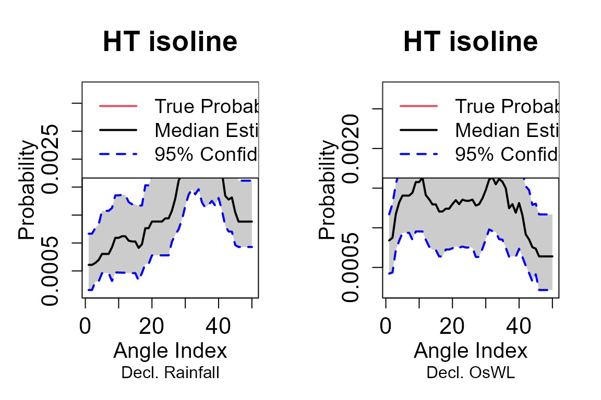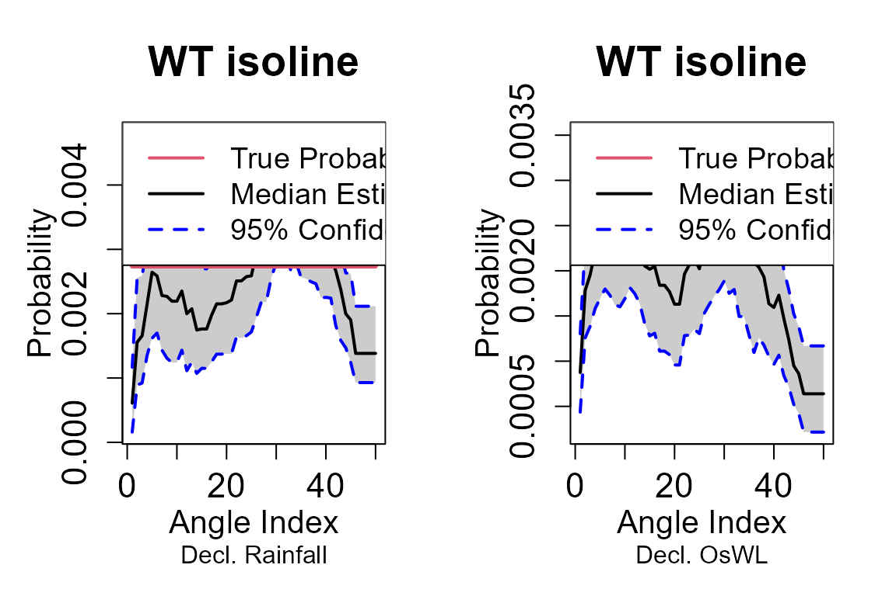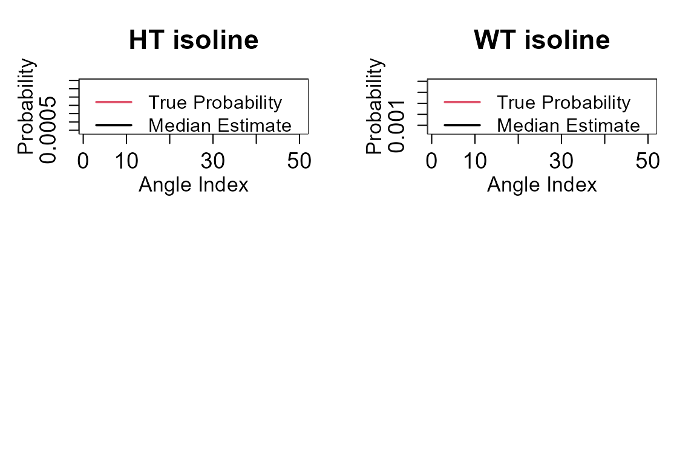
5. Trivariate analysis
The package contains three higher dimensional approaches are implemented to model the joint distribution of rainfall, O-sWL and groundwater level. They are:
- Standard (trivariate) copula
- Pair Copula Construction
- Heffernan and Tawn (2004)
Standard (trivariate) copula
In the package, each approach has a _Fit and
_Sim function. The latter requires a MIGPD
object as its Marginals input argument, in order for the
simulations on $\[0,1\]^3$ to be
transformed back to the original scale. The Migpd_Fit
command fits independent GPDs to the data in each row of a dataframe
(excluding the first column if it is a “Date” object) creating a
MIGPD object.
S20.Migpd<-Migpd_Fit(Data=S20.Detrend.Declustered.df[,-1],Data_Full = S20.Detrend.df[,-1],
mqu=c(0.975,0.975,0.9676))
summary(S20.Migpd)
#>
#> A collection of 3 generalized Pareto models.
#> All models converged.
#> Penalty to the likelihood: gaussian
#>
#> Summary of models:
#> Rainfall OsWL Groundwater
#> Threshold 1.6000000 1.9385406 2.8599327
#> P(X < threshold) 0.9750000 0.9750000 0.9676000
#> sigma 0.9040271 0.1574806 0.3083846
#> xi 0.1742220 0.2309118 -0.3441421
#> Upper end point Inf Inf 3.7560295Standard (trivariate) copula are the most conceptually simple of the
copula based models, using a single parametric multivariate probability
distribution as the copula. The Standard_Copula_Fit()
function fits elliptic (specified by Gaussian or
tcop) or Archimedean (specified by
Gumbel,Clayton or Frank) copula
to a trivariate dataset. Let first fit a Gaussian copula
S20.Gaussian<-Standard_Copula_Fit(Data=S20.Detrend.df,Copula_Type="Gaussian")From which the Standard_Copula_Sim() function can be
used to simulate a synthetic record of N years
S20.Gaussian.Sim<-Standard_Copula_Sim(Data=S20.Detrend.df,Marginals=S20.Migpd,
Copula=S20.Gaussian,N=100)Plotting the observed and simulated values
S20.Pairs.Plot.Data<-data.frame(rbind(na.omit(S20.Detrend.df[,-1]),S20.Gaussian.Sim$x.Sim),
c(rep("Observation",nrow(na.omit(S20.Detrend.df))),
rep("Simulation",nrow(S20.Gaussian.Sim$x.Sim))))
colnames(S20.Pairs.Plot.Data)<-c(names(S20.Detrend.df)[-1],"Type")
pairs(S20.Pairs.Plot.Data[,1:3],
col=ifelse(S20.Pairs.Plot.Data$Type=="Observation","Black",alpha("Red",0.3)),
upper.panel=NULL,pch=16)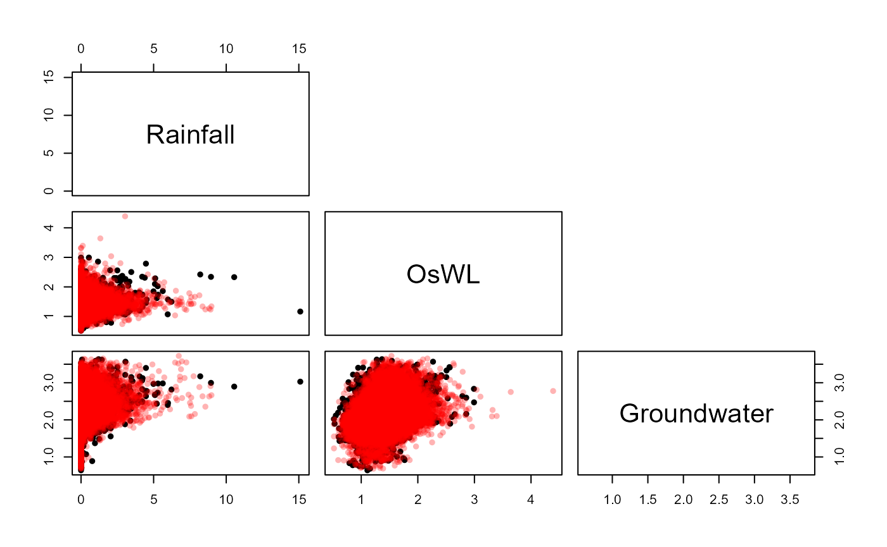
The Standard_Copula_Sel() function can be used to deduce
the best fitting in terms of AIC
Standard_Copula_Sel(Data=S20.Detrend.df)
#> Copula AIC
#> 1 Gaussian -1389.1438
#> 2 t-cop -1434.7850
#> 3 Gumbel -876.7537
#> 4 Clayton -565.7595
#> 5 Frank -854.4284Pair Copula Construction
Standard trivariate copulas lack flexibility to model joint distributions where heterogeneous dependencies exist between the variable pairs. Pair copula constructions construct multivariate distribution using a cascade of bivariate copulas (some of which are conditional). As the dimensionality of the problem increases the number of mathematically equally valid decompositions quickly becomes large. Bedford and Cooke (2001,2002) introduced the regular vine, a graphical model which helps to organize the possible decompositions. The Canonical (C-) and D- vine are two commonly utilized sub-categories of regular vines, in the trivariate case a vine copula is simultaneously a C- and D-vine. Let’s fit a regular vine copula model
S20.Vine<-Vine_Copula_Fit(Data=S20.Detrend.df)From which the Vine_Copula_Sim() function can be used to
simulate a synthetic record of N years
S20.Vine.Sim<-Vine_Copula_Sim(Data=S20.Detrend.df,Vine_Model=S20.Vine,Marginals=S20.Migpd,N=100)Plotting the observed and simulated values
S20.Pairs.Plot.Data<-data.frame(rbind(na.omit(S20.Detrend.df[,-1]),S20.Vine.Sim$x.Sim),
c(rep("Observation",nrow(na.omit(S20.Detrend.df))),
rep("Simulation",nrow(S20.Vine.Sim$x.Sim))))
colnames(S20.Pairs.Plot.Data)<-c(names(S20.Detrend.df)[-1],"Type")
pairs(S20.Pairs.Plot.Data[,1:3],
col=ifelse(S20.Pairs.Plot.Data$Type=="Observation","Black",alpha("Red",0.3)),
upper.panel=NULL,pch=16)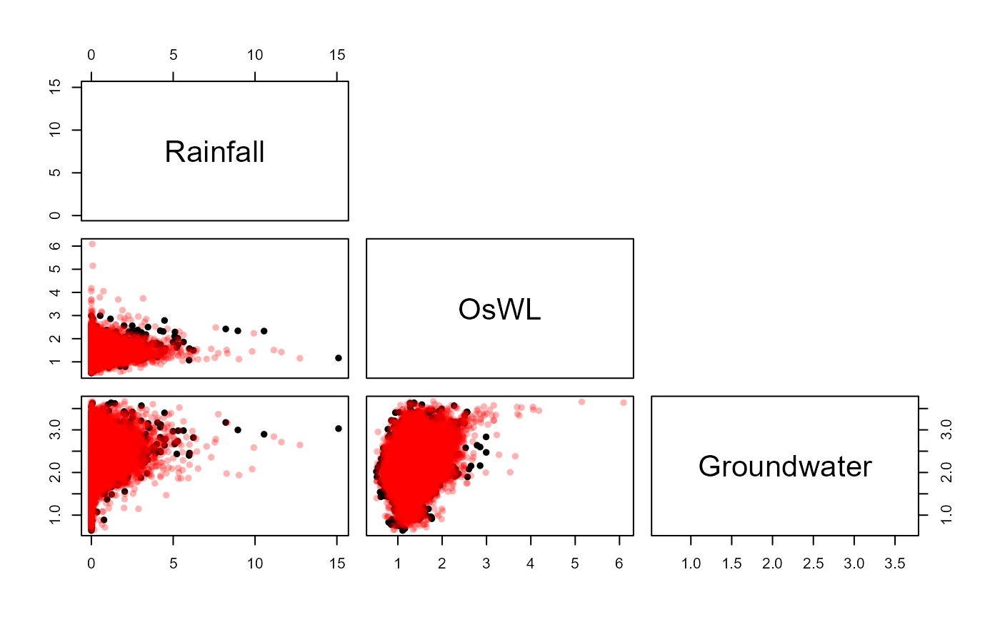
HT04
Finally, let us implement the Heffernan and Tawn (2004) approach, in which a non-linear regression model is fitted to joint observations where a conditioning variable exceeds a specified threshold. The regression model typically adopted is: where:
is a set of variables transformed to a common scale is the set of variables excluding and are vectors of regression parameters is a vector of residuals
The dependence structure when a specified variable is extreme is thus captured by the regression parameters and the joint residuals. The procedure is repeated, conditioning on each variable in turn, to build up the joint distribution when at least one variable is in an extreme state. The HT04 command fits the model and simulates N years’ worth of data from the fitted model.
S20.HT04<-HT04(data_Detrend_Dependence_df=S20.Detrend.df,
data_Detrend_Declustered_df=S20.Detrend.Declustered.df,
u_Dependence=0.995,Migpd=S20.Migpd,mu=365.25,N=1000)Output of the function includes the three conditional
Models, proportion of occasions where each variable is most
extreme given at least one variable is extreme propas well
as, the simulations on the transformed scale u.Sim (Gumbel
by default) and original scale x.Sim. Let’s view the fitted
model when conditioning on rainfall
S20.HT04$Model$Rainfall
#> mexDependence(x = Migpd, which = colnames(data_Detrend_Dependence_df)[i],
#> dqu = u_Dependence, margins = "laplace", constrain = FALSE,
#> v = V, maxit = Maxit)
#>
#>
#> Marginal models:
#>
#> Dependence model:
#>
#> Conditioning on Rainfall variable.
#> Thresholding quantiles for transformed data: dqu = 0.995
#> Using laplace margins for dependence estimation.
#> Log-likelihood = -108.5807 -84.53349
#>
#> Dependence structure parameter estimates:
#> OsWL Groundwater
#> a 1.0000 0.3295
#> b 0.6948 -1.5240
S20.HT04$Prop
#> [1] 0.3552632 0.3157895 0.3289474and the which the proporiton of the occasions in the original sample that rainfall is the most extreme of the drivers given that at least one driver is extreme.
The HT04 approach uses rejection sampling to generate synthetic
records. The first step involves sampling a variable, conditioned to
exceed the u_Dependence threshold. A joint residual
associated with the corresponding regression is independently sampled
and other variables estimated using the fitted regression parameters. If
the variable conditioned to be extreme in step one is not the most
extreme the sample is rejected. The process is repeated until the
relative proportion of simulated events where each variable is a
maximum, conditional on being above the threshold, is consistent with
the empirical distribution. Labeling the simulations
S20.HT04.Sim
S20.HT04.Sim<-S20.HT04$x.simand now plotting the simulations from the HT04 model
S20.Pairs.Plot.Data<-data.frame(rbind(na.omit(S20.Detrend.df[,-1]),S20.HT04.Sim),
c(rep("Observation",nrow(na.omit(S20.Detrend.df))),
rep("Simulation",nrow(S20.HT04.Sim))))
colnames(S20.Pairs.Plot.Data)<-c(names(S20.Detrend.df)[-1],"Type")
pairs(S20.Pairs.Plot.Data[,1:3],
col=ifelse(S20.Pairs.Plot.Data$Type=="Observation","Black",alpha("Red",0.2)),
upper.panel=NULL,pch=16)6. Sea Level Rise
The SLR_Scenarios function estimates the time required
for a user-specified amount of sea level rise (
SeaLevelRise) to occur under various sea level rise
scenarios. The default scenarios are for Key West from the Southeast
Florida Regional Climate Change Compact (2019). Let’s calculate how long
before the O-sWL in the 100-year “most-likely” design event (see section
4) equals that of the corresponding design event derived under full
dependence.
#Difference in O-sWL between the most-likely and full dependence events
Diff<-S20.Bivariate$FullDependence$`100`$OsWL-S20.Bivariate$MostLikelyEvent$`100`$OsWL
Diff
#> [1] 0.1269654
#Time in years for the sea level rise to occur
SLR_Scenarios(SeaLevelRise=Diff,Unit="m")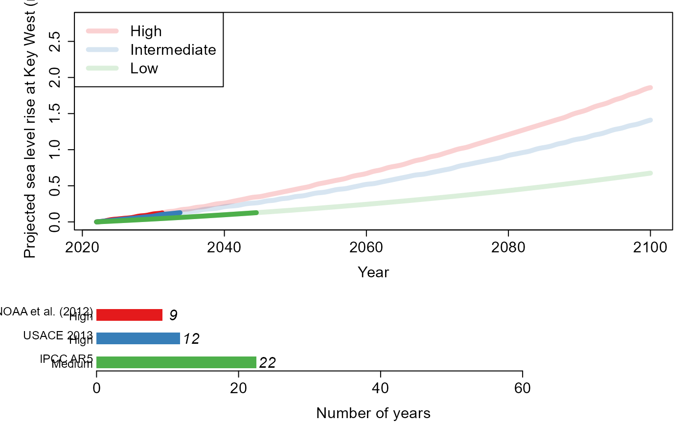
#> $High
#> [1] 2031
#>
#> $Intermediate
#> [1] 2034
#>
#> $Low
#> [1] 2044Scenarios from the Interagency Sea Level Rise Scenario Tool (2022)
for Miami Beach and Naples can be utilized by changing the
Scenario and Location arguments.
Alternatively, a user can input other sea level rise scenarios into the
function. For example, below we use the scenarios from the same tool but
for Fort Myers.
#Sea level rise scenarios for Fort Myers
head(sl_taskforce_scenarios_psmsl_id_1106_Fort_Myers)
#> psmsl_id process Units scenario quantile X2020 X2030 X2040 X2050
#> 1 1106 total mm Low 17 79.48296 118.483 168.483 210.483
#> 2 1106 total mm Low 50 101.48296 154.483 210.483 264.483
#> 3 1106 total mm Low 83 123.48296 193.483 258.483 320.483
#> 4 1106 total mm IntLow 17 87.48296 134.483 189.483 244.483
#> 5 1106 total mm IntLow 50 109.48296 171.483 239.483 307.483
#> 6 1106 total mm IntLow 83 132.48296 210.483 289.483 369.483
#> X2060 X2070 X2080 X2090 X2100 X2110 X2120 X2130 X2140
#> 1 248.483 285.483 313.483 336.483 361.483 389.483 417.483 442.483 465.483
#> 2 309.483 350.483 383.483 412.483 453.483 493.483 531.483 566.483 601.483
#> 3 378.483 421.483 462.483 505.483 566.483 619.483 674.483 725.483 777.483
#> 4 306.483 369.483 431.483 492.483 550.483 612.483 675.483 732.483 792.483
#> 5 374.483 442.483 512.483 577.483 646.483 722.483 798.483 877.483 955.483
#> 6 445.483 521.483 603.483 680.483 767.483 858.483 952.483 1052.483 1161.483
#> X2150
#> 1 489.483
#> 2 634.483
#> 3 829.483
#> 4 848.483
#> 5 1033.483
#> 6 1274.483
#Formatting to a data frame that can be interpreted by the tool
SeaLevelRise.2022_input<-data.frame(Year=seq(2020,2150,10),
"High"=as.numeric(sl_taskforce_scenarios_psmsl_id_1106_Fort_Myers[14,-(1:5)])/1000,
"Int_Medium"=as.numeric(sl_taskforce_scenarios_psmsl_id_1106_Fort_Myers[11,-(1:5)])/1000,
"Medium"=as.numeric(sl_taskforce_scenarios_psmsl_id_1106_Fort_Myers[8,-(1:5)])/1000,
"Int_Low"=as.numeric(sl_taskforce_scenarios_psmsl_id_1106_Fort_Myers[5,-(1:5)])/1000,
"Low"=as.numeric(sl_taskforce_scenarios_psmsl_id_1106_Fort_Myers[2,-(1:5)])/1000)
#Finding time in years for 0.8m of sea level rise to occur
SLR_Scenarios(SeaLevelRise=0.8, Scenario="Other", Unit = "m", Year=2022,
Location="Fort Myers", New_Scenario=SeaLevelRise.2022_input)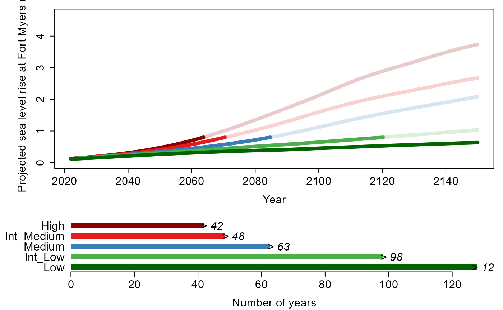
#> $SLR_Year
#> [1] 2150 2120 2085 2070 20647. Simulating temporally varying events
By sampling peaks from a multivariate statistical model e.g., a vine copula that includes the relative lag between the rainfall and water level peaks as well as their magnitudes temporally-varying synthetic events can be simulated.
Water level curves
The intensity of a storm surge event is defined in Wahl et al. 2011
as the area of the water level curve above a specified base line level
from the first low water level of the preceding tide and last low tide
of the following tide. The intensity() function calculates
this metric with the default baseline level set as the mean of the water
level time series (Base_Line="Mean "). Let’s
calculate the “intensity” of cluster maxima in the hourly O-sWL time
series at control structure S-13.
#Decluster O-sWL series at S-13 using a runs method
S13.OsWL.Declust = Decluster(Data=S13.Detrend.df$OsWL,
SepCrit=24*7, u=0.99667)
#Calculate O-sWL of the identified cluster maximum
intensity = Intensity(Data=S13.Detrend.df[,c(1,3)],
Cluster_Max=S13.OsWL.Declust$EventsMax,
Base_Line=2)Plotting a subset of the events:
#Plotting water levels
#Converting Date_Time column to POSIXct class
S13.Detrend.df$Date_Time <- as.POSIXct(S13.Detrend.df$Date_Time,
format = "%Y-%m-%d %H:%M:%S")
plot(S13.Detrend.df$Date_Time[(S13.OsWL.Declust$EventsMax[1]-48):(S13.OsWL.Declust$EventsMax[1]+48)],
S13.Detrend.df$OsWL[(S13.OsWL.Declust$EventsMax[1]-48):(S13.OsWL.Declust$EventsMax[1]+48)],
xlab="Time", ylab="O-sWL (ft NGVD 29)",type='l',lwd=1.5)
#Adding purple points denoting preceding and following high tides
points(S13.Detrend.df$Date_Time[intensity$Pre.High[1]],
S13.Detrend.df$OsWL[intensity$Pre.High[1]],pch=16,cex=1.5,col="Purple")
points(S13.Detrend.df$Date_Time[intensity$Fol.High[1]],
S13.Detrend.df$OsWL[intensity$Fol.High[1]],pch=16,cex=1.5,col="Purple")
#Adding orange points denoting preceding and following low tides
points(S13.Detrend.df$Date_Time[intensity$Pre.Low[1]],
S13.Detrend.df$OsWL[intensity$Pre.Low[1]],pch=16,cex=1.5,col="Orange")
points(S13.Detrend.df$Date_Time[intensity$Fol.Low[1]],
S13.Detrend.df$OsWL[intensity$Fol.Low[1]],pch=16,cex=1.5,col="Orange")
#Recall BaseLine=2
baseline= 2
# Only create polygon showing intensity
above<- S13.Detrend.df$OsWL[intensity$Pre.Low[1]:intensity$Fol.Low[1]] > baseline
if(any(above)) {
runs <- rle(above)
ends <- cumsum(runs$lengths)
starts <- c(1, ends[-length(ends)] + 1)
for(j in which(runs$values)) {
start_idx <- starts[j]
end_idx <- ends[j]
x_seg <- S13.Detrend.df$Date_Time[intensity$Pre.Low[1]:intensity$Fol.Low[1]][start_idx:end_idx]
y_seg <- S13.Detrend.df$OsWL[intensity$Pre.Low[1]:intensity$Fol.Low[1]][start_idx:end_idx]
polygon(x = c(x_seg, rev(x_seg)),
y = c(y_seg, rep(baseline, length(x_seg))),
col = "dark grey", border = NA)
}
}
The WL_Curve() function generates a water level curve
conditioned on a water level event peak (Peak) and
“intensity” (Intensity). The function works by re-scaling
observed events curves between four time units before and after the peak
such that the re-scaled peak coincides with conditioned peak. It then
computes the intensity of the re-scaled events and selects the event
with the highest intensity that’s less than conditioned intensity.
Intensity units are then added to ensure the intensity of the simulated
curve matches the conditioned intensity. The Intensity units, which
manifest as increases in water level, are distributed in proportion with
the decreases of water levels from the peak OsWL i.e., more units are
added at lower water levels. No units are added about the peak. For
conditioned event peaks below a user-specified threshold
(Thres) an observed curve with an intensity less than some
user-specified limit (Limit) is randomly sampled.
#Four synthetic events all with intensity of 60 units
sim.peaks = c(3.4,4,4.2,5)
sim.intensity = c(60,60,60,60)
#Generating the water level curves
oswl_ts_oswl = WL_Curve(Data = S13.Detrend.df,
Cluster_Max = S13.OsWL.Declust$EventsMax,
Pre_Low = intensity$Pre.Low,
Fol_Low = intensity$Fol.Low,
Thres = S13.OsWL.Declust$Threshold, Limit = 45,
Peak = sim.peaks,
Base_Line=2,
Intensity = sim.intensity)Superimposing the four simulated water level curves on the observed curves:
#Plot the water level curves of the observed peaks
plot(-144:144,
S13.Detrend.df$OsWL[(S13.OsWL.Declust$EventsMax[1]-144):
(S13.OsWL.Declust$EventsMax[1]+144)],
xlab="Time relative to peak(hour)", ylab="O-sWL (ft NGVD 29)", type='l',ylim=c(-2,6))
for(i in 2:length(S13.OsWL.Declust$EventsMax)){
lines(-144:144,
S13.Detrend.df$OsWL[(S13.OsWL.Declust$EventsMax[i]-144):
(S13.OsWL.Declust$EventsMax[i]+144)])
}
#Superimpose the curves generated for the four synthetic events
for(i in 1:4){
lines(-144:144,oswl_ts_oswl$Series[i,],col=2)
}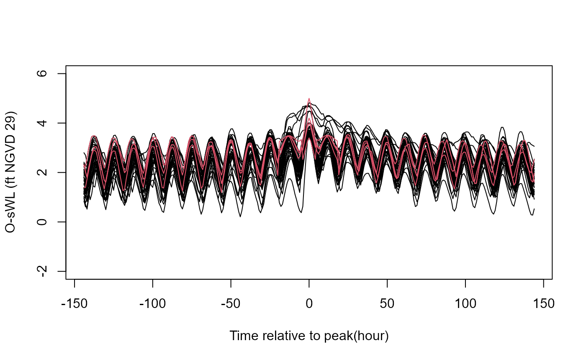
Hyetographs
Serinaldi and Kilsby
studied the pairwise relationships between key hyetograph
characteristics: maximum value
,
volume
,
duration
,
and average intensity
at
rain gauge stations in central eastern Europe with daily rainfall
records and three 5-minutes record gauges in Italy. The authors found
that at both temporal scales the only stochastic relationship was
between volume and duration, and that simple bootstrap procedures could
be used to generate events that preserve the pairwise relationships
among the characteristics. The U_Sample function implements
a bootstrap procedure referred to as the U-boot algorithm in Serinaldi and Kilsby
(2013) to generate hyetograhs. For a simulated peak Xp,
a duration is independently sampled and a set of non-peaks are sampled
at random from one of the events with the same duration. To implement
the method exactly as in Serinaldi and Kilsby
(2013), set Xp equal to a sample (taken with
replacement) of the observed cluster maximum (peaks). An example
application of the function is given below for rainfall recorded at
control structure S-13. First the hourly time series is declustered to
find the characteristics of the rainfall events containing the
highest peaks:
#First decluster the rainfall series to find the 500 events
#with the highest peaks
S13.Rainfall.Declust = Decluster(Data=S13.Detrend.df$Rainfall,
SepCrit=24*3, u=0.99667)
#Hourly peaks
peaks = S13.Detrend.df$Rainfall[S13.Rainfall.Declust$EventsMax]
#Set very small rainfall measurements to zero.
#Assumed to be the result of uncertainty in measuring equipment.
S13.Detrend.df$Rainfall[which(S13.Detrend.df$Rainfall<0.01)] = 0
#Find NAs in rainfall series
z = which(is.na(S13.Detrend.df$Rainfall)==T)
#Temporarily set NAs to zero
S13.Detrend.df$Rainfall[z] = 0
#Find times where there is 6-hours of no rainfall
no.rain = rep(NA,length(S13.Detrend.df$Rainfall))
for(i in 6:length(S13.Detrend.df$Rainfall)){
no.rain[i] = ifelse(sum(S13.Detrend.df$Rainfall[(i-5):i])==0,i,NA)
}
#Remove NAs from results vector as these correspond to times where there is
#rainfall at certain points in the 6 hour period.
no.rain = na.omit(no.rain)
#Reset missing values in the rainfall record back to NA
S13.Detrend.df$Rainfall[z] = NA
#Find the start and end times of the 500 events.
start = rep(NA,length(S13.Rainfall.Declust$EventsMax))
end = rep(NA,length(S13.Rainfall.Declust$EventsMax))
for(i in 1:length(S13.Rainfall.Declust$EventsMax)){
start[i] = max(no.rain[which(no.rain<S13.Rainfall.Declust$EventsMax[i])])
end[i] = min(no.rain[which(no.rain>S13.Rainfall.Declust$EventsMax[i])])
}
start = start + 1
end = end - 6
d = end - start + 1 #Duration
#Simulate some peaks by sampling observed peaks with replacement
#I.e., applying the method exactly as in Serinaldi and Kilsby (2013)
sim.peak = sample(peaks,size=500,replace=TRUE)Now the bootstrapping procedure can be carried out:
sample = U_Sample(Data=S13.Detrend.df$Rainfall,
Cluster_Max=S13.Rainfall.Declust$EventsMax,
D=d,Start=start,End=end,
Xp=sim.peak)Let’s check whether the characteristic of the bootstrapped events match those of the observed events. First, calculating the volume and intensity of the observed events with the highest hourly peaks.
#Calculating volume and intensity
v<-rep(NA,500)
for(i in 1:length(S13.Rainfall.Declust$EventsMax)){
v[i] = sum(S13.Detrend.df$Rainfall[(start[i]):(end[i])])
}
I = v/d
#Putting in a data.frame
observations = data.frame(peaks,d,v,I)
colnames(observations) = c("peak","d","v","I")To aid the comparison information relating to the marginal distributions of the characteristics is removed by transforming the data to the scale.
#Observations
observations.u = data.frame(pobs(observations))
colnames(observations.u) = c("peak","d","v","I")
#Sample
sample.u = data.frame(pobs(sample))Scatter plots showing the pairwise relationships of the characteristics:
#Layout of the plots
par(mfrow=c(4,6))
par(mar=c(4.2,4.2,0.1,0.1))
#Characteristics of observations on original scale
plot(observations$peak,observations$I,pch=16,xlab="",ylab="",cex.axis=1.25)
mtext(expression('X'[p]),side=1,line=3)
mtext("I",side=2,line=2.3)
plot(observations$peak,observations$v,pch=16,xlab="",ylab="",cex.axis=1.25)
mtext(expression('X'[p]),side=1,line=3)
mtext("V",side=2,line=2.3)
plot(observations$peak,observations$d,pch=16,xlab="",ylab="",cex.axis=1.25)
mtext(expression('X'[p]),side=1,line=3)
mtext("D",side=2,line=2.3)
plot(observations$I,observations$v,pch=16,xlab="",ylab="",cex.axis=1.25)
mtext("I",side=1,line=2.5)
mtext("V",side=2,line=2.3)
plot(observations$I,observations$d,pch=16,xlab="",ylab="",cex.axis=1.25)
mtext("I",side=1,line=2.5)
mtext("D",side=2,line=2.3)
plot(observations$v,observations$d,pch=16,xlab="",ylab="",cex.axis=1.25)
mtext("V",side=1,line=2.5)
mtext("D",side=2,line=2.3)
#Characteristics of sample on original scale
plot(sample$Xp,sample$I,pch=16,xlab="",ylab="",cex.axis=1.25,col=2)
mtext(expression('X'[p]),side=1,line=3)
mtext('I',side=2,line=2.3)
plot(sample$Xp,sample$V,pch=16,xlab="",ylab="",cex.axis=1.25,col=2)
mtext(expression('X'[p]),side=1,line=3)
mtext('V',side=2,line=2.3)
plot(sample$Xp,sample$D,pch=16,xlab="",ylab="",cex.axis=1.25,col=2)
mtext(expression('X'[p]),side=1,line=3)
mtext("D",side=2,line=2.3)
plot(sample$I,sample$V,pch=16,xlab="",ylab="",cex.axis=1.25,col=2)
mtext('I',side=1,line=2.5)
mtext('V',side=2,line=2.3)
plot(sample$I,sample$D,pch=16,xlab="",ylab="",cex.axis=1.25,col=2)
mtext('I',side=1,line=2.5)
mtext("D",side=2,line=2.3)
plot(sample$V,sample$D,pch=16,xlab="",ylab="",cex.axis=1.25,col=2)
mtext('V',side=1,line=2.5)
mtext("D",side=2,line=2.3)
#Characteristics of observations on the [0,1] scale
plot(observations.u$peak,observations.u$I,pch=16,xlab="",ylab="",cex.axis=1.25)
mtext(expression('X'[p]),side=1,line=3)
mtext('I',side=2,line=2.3)
plot(observations.u$peak,observations.u$v,pch=16,xlab="",ylab="",cex.axis=1.25)
mtext(expression('X'[p]),side=1,line=3)
mtext('V',side=2,line=2.3)
plot(observations.u$peak,observations.u$d,pch=16,xlab="",ylab="",cex.axis=1.25)
mtext(expression('X'[p]),side=1,line=3)
mtext('D',side=2,line=2.3)
plot(observations.u$I,observations.u$v,pch=16,xlab="",ylab="",cex.axis=1.25)
mtext('I',side=1,line=2.5)
mtext('V',side=2,line=2.3)
plot(observations.u$I,observations.u$d,pch=16,xlab="",ylab="",cex.axis=1.25)
mtext('I',side=1,line=2.5)
mtext('D',side=2,line=2.3)
plot(observations.u$v,observations.u$d,pch=16,xlab="",ylab="",cex.axis=1.25)
mtext('V',side=1,line=2.5)
mtext('D',side=2,line=2.3)
#Characteristics of sample on the [0,1] scale
plot(sample.u$Xp,sample.u$I,pch=16,xlab="",ylab="",cex.axis=1.25,col=2)
mtext(expression('X'[p]),side=1,line=3)
mtext('I',side=2,line=2.3)
plot(sample.u$Xp,sample.u$V,pch=16,xlab="",ylab="",cex.axis=1.25,col=2)
mtext(expression('X'[p]),side=1,line=3)
mtext('V',side=2,line=2.3)
plot(sample.u$Xp,sample.u$D,pch=16,xlab="",ylab="",cex.axis=1.25,col=2)
mtext(expression('X'[p]),side=1,line=3)
mtext("D",side=2,line=2.3)
plot(sample.u$I,sample.u$V,pch=16,xlab="",ylab="",cex.axis=1.25,col=2)
mtext('I',side=1,line=2.5)
mtext('V',side=2,line=2.3)
plot(sample.u$I,sample.u$D,pch=16,xlab="",ylab="",cex.axis=1.25,col=2)
mtext('I',side=1,line=2.5)
mtext("D",side=2,line=2.3)
plot(sample.u$V,sample.u$D,pch=16,xlab="",ylab="",cex.axis=1.25,col=2)
mtext('V',side=1,line=2.5)
mtext("D",side=2,line=2.3)The figure demonstrates that the simulated events preserves the key characteristics of the observed events.